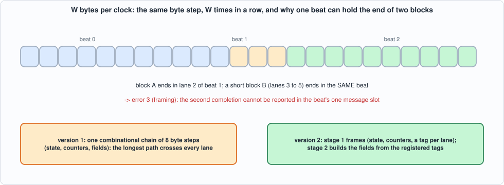
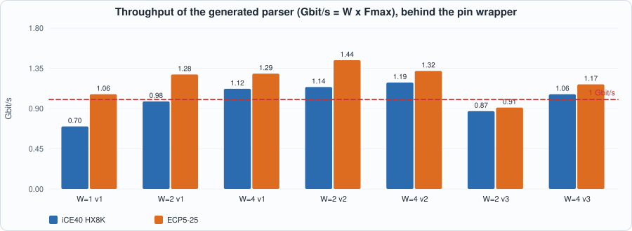
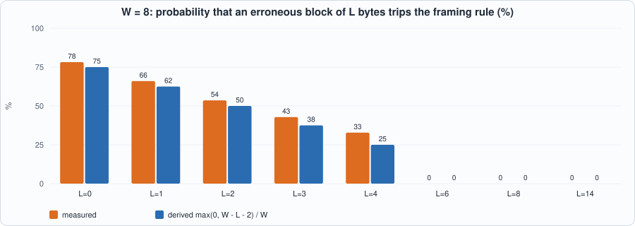

17. Line-Rate Message Parsing: W Bytes per Clock, Messages That Span Beats, and a Straightforward Design That Does Not Scale¶
About the kestrels in this picture
- Lesser kestrel (Falco naumanni) breeds in colonies in Mediterranean Europe and Central Asia and migrates to Africa for the winter. It feeds largely on large insects and nests in cavities in old buildings and cliffs.
- Mauritius kestrel (Falco punctatus) lives only on the island of Mauritius. By the mid-1970s only a handful of wild birds were known (the figure usually quoted is four); captive breeding and release programmes brought the population back to hundreds.
The scene is imaginary and the birds are stylised drawings.
What you will see: Chapter 16's parser takes one byte per clock, which is a gigabit and no more. A 10-gigabit feed needs eight bytes per clock or more, and then a message no longer starts at the beginning of a beat: it starts in lane 3, spans two beats, and the next block's length bytes arrive in the same beat that finishes it. The chapter extends the generator to emit a W-bytes-per-beat parser, tests it against a model with the same fault-filled streams as Chapter 16 (now with every alignment), and measures honestly what it achieves: the straightforward design does not scale. It is correct, byte for byte and cycle for cycle, for W = 2, 4 and 8, but its clock falls roughly as 1/W, so the throughput gains little, and at W = 8 the synthesis tool did not finish in 15 minutes. A rebuilt version helps a little; a second rebuild makes it worse, and the chapter says so.
What you need to know first: Chapter 16 (the grammar, the generator, the model) and Chapter 15 (what a design that misses the clock looks like).
What this chapter builds: tools/gen_parser_wide.py (the generator: versions 1, 2 and 3), rtl/mold_wide.sv (W = 8, version 2, checked in), model/wide_gold.py (the specification and the stimulus), tb/wide_tb.sv, tools/ch17_run.py, tools/ch17_example_a.py, tools/ch17_example_b.py, tools/mut_ch17.py, tools/make_figs_ch17.py.
Scope: what this chapter leaves out, on purpose
One message record per beat. At most one block may complete in a beat; a second one is a framing error (below), which for W up to 14 can happen only with erroneous blocks, because a valid ITCH message is at least 14 bytes on the wire. A design that reports several messages per beat needs several record slots and is not built. W = 8 was not measured on hardware: synthesis did not finish (Example A); it is simulated and compared with the model like the others. No sequencing, no SoupBinTCP/OUCH (Chapter 16's open items). The layouts are Chapter 16's (from memory, not checked against the specification). Fixed layouts only.
What a beat adds¶
A beat is valid, sop, eop, nb, data with W byte lanes; lane 0 holds the earliest byte; nb is the number of valid bytes (1 to W, less than W only in the last beat of a packet); a beat with sop begins a packet at lane 0. Chapter 16's contract carries over with two changes, written in model/wide_gold.py:
- The cycle of an event is that of the beat that contains the last byte of the block, plus the latency of the design (1 for version 1, 2 for versions 2 and 3).
- At most one block may complete in a beat. The first is reported as before. A second block completing in the same beat is a framing error (err 3): an event
Xwith the block's index is produced, the rest of the packet is ignored, and its packet end reportstrunc. The field registers are a snapshot taken when the block completes, because the next message can start in the same beat and would otherwise overwrite them.

Figure 17.1: a beat holds bytes of two blocks; a short second block completing in the same beat is a framing error.The generator¶
The chapter's generator, gen_parser_wide.py, takes the same grammar as Chapter 16's and emits, for W lanes, the byte step of Chapter 16 repeated W times in one combinational chain (version 1): lane j runs if j < nb, reads its byte, advances the header position or the block state, counts down the remaining length, pushes the byte into the field registers it belongs to, and, when a block ends, completes it. Everything after the chain is registered.
#!/usr/bin/env python3
"""Chapter 17: the WIDE parser generator: grammar (model/grammar.py) -> a MoldUDP64 parser that takes W bytes per clock.
Usage: python3 tools/gen_parser_wide.py [W] [name] [out.sv] [version] (defaults: 8 mold_wide8 rtl/mold_wide8.sv 1)
Interface (specified by model/wide_gold.py): in: clk rst valid sop eop nb[3:0] data[8W-1:0]; lane j is bits 8j+7:8j and lane 0 holds the EARLIEST byte; nb is the number of valid bytes (1..W; less than W only in the last beat of a packet); a beat with sop starts a packet at lane 0.
out: m_valid m_type m_err m_idx h_seq f_<field>... the first block that COMPLETES in a beat, registered, the cycle after the beat (err 0 ok, 1 unknown type, 2 wrong length or zero length); the f_ registers are a SNAPSHOT taken when the block completes, so the next message starting in the same beat cannot spoil them
x_valid x_idx a second block completing in the same beat: err 3, FRAMING ERROR: the packet is abandoned (the rest of it is ignored; its packet end reports trunc). Valid messages are at least 12 bytes + 2 of length, so for W <= 8 only erroneous blocks can do this
p_valid p_trunc p_cntbad h_session h_count as in Chapter 16
Version 1 is the straightforward design: the byte step of Chapter 16 unrolled W times in one combinational chain. Version 2 (see gen_pipe in this file) is the rebuilt one."""
import os, sys
sys.path.insert(0, os.path.join(os.path.dirname(os.path.abspath(__file__)), "..", "model"))
import grammar
HEAD = ["input logic clk, input logic rst, input logic valid, input logic sop, input logic eop, input logic [3:0] nb, input logic [{w8}:0] data,",
"output logic m_valid, output logic [7:0] m_type, output logic [1:0] m_err, output logic [15:0] m_idx, output logic [63:0] h_seq,",
"output logic x_valid, output logic [15:0] x_idx,",
"output logic p_valid, output logic p_trunc, output logic p_cntbad, output logic [79:0] h_session, output logic [15:0] h_count,"]
def wrapper(F, name, W):
"""A wrapper with a handful of pins, ONLY so that the design fits a chip for the place-and-route runs: the inputs are shifted in serially, the outputs are folded (two register stages) into one 16-bit word."""
iw = 8 * W + 7; ow = 1 + 8 + 2 + 16 + 64 + 1 + 16 + 3 + 80 + 16 + sum(8 * n for n in F.values()); nch = (ow + 15) // 16; ng = (nch + 7) // 8; L = []; A = L.append
A(f"module {name}_syn (input logic clk, input logic rst, input logic si, input logic sh, output logic [15:0] info);")
A(f" logic [{iw - 1}:0] iv; logic m_valid, x_valid, p_valid, p_trunc, p_cntbad; logic [7:0] m_type; logic [1:0] m_err; logic [15:0] m_idx, x_idx, h_count; logic [63:0] h_seq; logic [79:0] h_session;")
for nm, n in F.items(): A(f" logic [{8 * n - 1}:0] f_{nm};")
A(f" always_ff @(posedge clk) if (sh) iv <= {{iv[{iw - 2}:0], si}};")
A(f" {name} u (.clk(clk), .rst(rst), .valid(iv[{iw - 1}]), .sop(iv[{iw - 2}]), .eop(iv[{iw - 3}]), .nb(iv[{8 * W + 3}:{8 * W}]), .data(iv[{8 * W - 1}:0]), .m_valid(m_valid), .m_type(m_type), .m_err(m_err), .m_idx(m_idx), .h_seq(h_seq), .x_valid(x_valid), .x_idx(x_idx), .p_valid(p_valid), .p_trunc(p_trunc), .p_cntbad(p_cntbad), .h_session(h_session), .h_count(h_count)" + "".join(f", .f_{nm}(f_{nm})" for nm in F) + ");")
A(f" logic [{ow - 1}:0] all; always_comb all = {{m_valid, m_type, m_err, m_idx, h_seq, x_valid, x_idx, p_valid, p_trunc, p_cntbad, h_session, h_count" + "".join(f", f_{nm}" for nm in F) + "};")
A(f" logic [15:0] g1 [{ng}]; logic [{nch * 16 - 1}:0] allp; always_comb allp = {nch * 16}'(all); logic [15:0] x;")
A(f" always_ff @(posedge clk) for (int q = 0; q < {ng}; q++) begin g1[q] <= 16'd0; for (int k = 0; k < 8; k++) if (q * 8 + k < {nch}) g1[q] <= g1[q] ^ 16'(allp >> ((q * 8 + k) * 16)); end")
A(f" always_comb begin x = 16'd0; for (int q = 0; q < {ng}; q++) x ^= g1[q]; end")
A(" always_ff @(posedge clk) info <= x;"); A("endmodule")
return "\n".join(L) + "\n"
def gen_pipe(g, name, W): return gen(g, name, W, 1)
def gen_v3(g, name, W): return gen(g, name, W, 2)
def gen(g, name, W, pipe=False):
F = grammar.fields(g); L = []; A = L.append
A(f"// GENERATED by tools/gen_parser_wide.py (version {1 + int(pipe)}) from model/grammar.py -- do not edit. W = {W} bytes per clock; {len(g)} message types, {len(F)} distinct fields.")
A("// verilator lint_off DECLFILENAME"); A("// verilator lint_off UNUSEDSIGNAL"); A("// verilator lint_off BLKSEQ"); A("// verilator lint_off UNOPTFLAT")
A(f"module {name} (\n " + "\n ".join(h.format(w8=8 * W - 1) for h in HEAD) + "\n " + ",\n ".join(f"output logic [{8 * n - 1}:0] f_{nm}" for nm, n in F.items()) + ");")
A(" localparam logic [2:0] IDLE = 3'd0, HDR = 3'd1, LENH = 3'd2, LENL = 3'd3, BODY = 3'd4, DEAD = 3'd5;")
A(" logic [2:0] st; logic [4:0] pos; logic [7:0] lenh, off, ty; logic [15:0] rem, nblk; logic [1:0] er;")
A(" logic [79:0] ses; logic [63:0] seq; logic [15:0] cnt;")
for nm, n in F.items(): A(f" logic [{8 * n - 1}:0] w_{nm};")
A(" // the chain: c_* are the state after the lanes processed so far")
A(" logic [2:0] c_st; logic [4:0] c_pos; logic [7:0] c_lenh, c_off, c_ty, b, e_len, t_ty; logic [15:0] c_rem, c_nblk, c_cnt, c_len; logic [1:0] c_er, er_d, t_er; logic [79:0] c_ses; logic [63:0] c_seq; logic c_done, lastb;")
A(" logic m_v, x_v, p_v, p_t, p_c; logic [7:0] m_t; logic [1:0] m_e; logic [15:0] m_i, x_i;")
if pipe:
A(f" // version 2: stage 1 (this chain) only FRAMES: it tags every lane with its role; stage 2 assembles the fields from the registered tags")
A(f" logic [{W - 1}:0] tg_ok, tg_comp; logic [7:0] tg_off [{W}]; logic [7:0] tg_ty [{W}];")
for nm, n in F.items(): A(f" logic [{8 * n - 1}:0] n_{nm}, o_{nm};")
A(" always_comb begin")
A(" c_st = st; c_pos = pos; c_lenh = lenh; c_off = off; c_ty = ty; c_rem = rem; c_nblk = nblk; c_er = er; c_ses = ses; c_seq = seq; c_cnt = cnt; c_done = 1'b0;")
A(" m_v = 1'b0; x_v = 1'b0; m_t = 8'd0; m_e = 2'd0; m_i = 16'd0; x_i = 16'd0; b = 8'd0; e_len = 8'd0; t_ty = 8'd0; t_er = 2'd0; er_d = 2'd0; lastb = 1'b0; c_len = 16'd0;")
if not pipe:
for nm in F: A(f" n_{nm} = w_{nm}; o_{nm} = f_{nm};")
jj = [0]
complete = lambda ty, err, snap: [" if (c_done) begin x_v = 1'b1; x_i = c_nblk; c_st = DEAD; end",
" else begin c_done = 1'b1; m_v = 1'b1; m_t = " + ty + "; m_e = " + err + "; m_i = c_nblk; c_nblk = c_nblk + 16'd1; c_st = LENH;" + (((" if (" + err + " == 2'd0) begin " if not pipe else " begin ") + ("tg_comp[" + str(jj[0]) + "] = 1'b1;" if pipe else " ".join(f"o_{nm} = n_{nm};" for nm in F)) + " end") if snap else "") + " end"]
if pipe: A(" tg_ok = '0; tg_comp = '0; for (int q = 0; q < " + str(W) + "; q++) begin tg_off[q] = 8'd0; tg_ty[q] = 8'd0; end")
for j in range(W):
jj[0] = j
A(f" // ---- lane {j}"); A(f" if ({j} < nb) begin")
A(f" b = data[{8 * j} +: 8];")
A(" case (b)")
for t, m in g.items(): A(f" 8'h{ord(t):02x}: e_len = 8'd{grammar.length(m)};")
A(" default: e_len = 8'd0;"); A(" endcase")
A(" er_d = (e_len == 8'd0) ? 2'd1 : (({8'd0, e_len} == c_rem) ? 2'd0 : 2'd2);")
if j == 0:
A(" if (sop) begin c_st = HDR; c_pos = 5'd1; c_nblk = 16'd0; " + ("c_ses[79:72] = b;" if pipe == 2 else "c_ses = {72'd0, b};") + " end else begin")
else: A(" begin")
A(" case (c_st)")
if pipe == 2: A(" HDR: begin if (c_pos < 5'd10) c_ses[8 * (9 - c_pos) +: 8] = b; else if (c_pos < 5'd18) c_seq[8 * (17 - c_pos) +: 8] = b; else c_cnt[8 * (19 - c_pos) +: 8] = b; c_pos = c_pos + 5'd1; if (c_pos == 5'd20) c_st = LENH; end")
else: A(" HDR: begin c_pos = c_pos + 5'd1; if (c_pos <= 5'd10) c_ses = {c_ses[71:0], b}; else if (c_pos <= 5'd18) c_seq = {c_seq[55:0], b}; else c_cnt = {c_cnt[7:0], b}; if (c_pos == 5'd20) c_st = LENH; end")
A(" LENH: begin c_lenh = b; c_st = LENL; end")
A(" LENL: begin c_len = {c_lenh, b}; c_rem = c_len; c_off = 8'd0;")
A(" if (c_len == 16'd0) begin"); L.extend(complete("8'd0", "2'd2", False)); A(" end else c_st = BODY; end")
A(" BODY: begin")
A(" lastb = (c_rem == 16'd1); t_ty = (c_off == 8'd0) ? b : c_ty; t_er = (c_off == 8'd0) ? er_d : c_er;")
A(" if (c_off == 8'd0) begin c_ty = b; c_er = er_d; end")
if pipe: A(f" tg_ok[{j}] = (c_er == 2'd0); tg_off[{j}] = c_off; tg_ty[{j}] = c_ty;")
else:
for nm, n in F.items():
terms = " || ".join(f"(c_ty == 8'h{ord(t):02x} && c_off >= 8'd{o} && c_off < 8'd{o + n_})" for t, o, n_ in [(t, 1 + sum(k for _, k in m[:[x for x, _ in m].index(nm)]), n) for t, m in g.items() if nm in [x for x, _ in m]])
A(f" if (c_off != 8'd0 && c_er == 2'd0 && ({terms})) n_{nm} = " + (f"{{n_{nm}[{8 * n - 9}:0], b}};" if n > 1 else "b;"))
A(" c_rem = c_rem - 16'd1; if (c_off != 8'hff) c_off = c_off + 8'd1;")
A(" if (lastb) begin"); A(" c_ty = t_ty; c_er = t_er;"); L.extend([" " + x for x in complete("t_ty", "t_er", True)]); A(" end end")
A(" default: ;"); A(" endcase"); A(" end")
A(" end")
A(" p_v = eop && (c_st != IDLE); p_t = (c_st != LENH); p_c = (c_st == LENH) && (c_nblk != c_cnt) && (c_cnt != 16'hffff);")
A(" end")
def terms_of(nm, tyv, offv):
n = F[nm]; out = []
for t, m in g.items():
names = [x for x, _ in m]
if nm in names: o = 1 + sum(k for _, k in m[:names.index(nm)]); out.append(f"({tyv} == 8'h{ord(t):02x} && {offv} >= 8'd{o} && {offv} < 8'd{o + n})")
return " || ".join(out)
if not pipe:
A(" always_ff @(posedge clk) begin")
A(" m_valid <= 1'b0; x_valid <= 1'b0; p_valid <= 1'b0;")
A(" if (rst) st <= IDLE;")
A(" else if (valid) begin")
A(" st <= eop ? IDLE : c_st; pos <= c_pos; lenh <= c_lenh; off <= c_off; ty <= c_ty; rem <= c_rem; nblk <= c_nblk; er <= c_er; ses <= c_ses; seq <= c_seq; cnt <= c_cnt;")
A(" m_valid <= m_v; m_type <= m_t; m_err <= m_e; m_idx <= m_i; x_valid <= x_v; x_idx <= x_i; h_seq <= c_seq; h_session <= c_ses; h_count <= c_cnt;")
A(" p_valid <= p_v; p_trunc <= p_t; p_cntbad <= p_c;")
for nm in F: A(f" w_{nm} <= n_{nm}; f_{nm} <= o_{nm};")
A(" end"); A(" end"); A("endmodule")
else:
A(f" logic v1; logic [{8 * W - 1}:0] d1; logic [{W - 1}:0] tg_ok1, tg_comp1; logic [7:0] tg_off1 [{W}]; logic [7:0] tg_ty1 [{W}]; logic m_v1, x_v1, p_v1, p_t1, p_c1; logic [7:0] m_t1; logic [1:0] m_e1; logic [15:0] m_i1, x_i1;")
A(" always_ff @(posedge clk) begin")
A(" v1 <= 1'b0;")
A(" if (rst) st <= IDLE;")
A(" else if (valid) begin")
A(" st <= eop ? IDLE : c_st; pos <= c_pos; lenh <= c_lenh; off <= c_off; ty <= c_ty; rem <= c_rem; nblk <= c_nblk; er <= c_er; ses <= c_ses; seq <= c_seq; cnt <= c_cnt;")
A(" v1 <= 1'b1; d1 <= data; tg_ok1 <= tg_ok; tg_comp1 <= tg_comp; m_v1 <= m_v; m_t1 <= m_t; m_e1 <= m_e; m_i1 <= m_i; x_v1 <= x_v; x_i1 <= x_i; p_v1 <= p_v; p_t1 <= p_t; p_c1 <= p_c;")
A(f" for (int q = 0; q < {W}; q++) begin tg_off1[q] <= tg_off[q]; tg_ty1[q] <= tg_ty[q]; end")
A(" end"); A(" end")
A(" logic [7:0] b2;")
A(" // stage 2: the fields, from the registered tags")
A(" always_comb begin")
for nm in F: A(f" n_{nm} = w_{nm}; o_{nm} = f_{nm};")
A(" b2 = 8'd0;")
for j in range(W):
A(f" b2 = d1[{8 * j} +: 8];")
for nm, n in F.items(): A(f" if (tg_ok1[{j}] && ({terms_of(nm, f'tg_ty1[{j}]', f'tg_off1[{j}]')})) n_{nm} = " + (f"{{n_{nm}[{8 * n - 9}:0], b2}};" if n > 1 else "b2;"))
A(f" if (tg_comp1[{j}]) begin " + " ".join(f"o_{nm} = n_{nm};" for nm in F) + " end")
A(" end")
A(" always_ff @(posedge clk) begin")
A(" m_valid <= 1'b0; x_valid <= 1'b0; p_valid <= 1'b0;")
A(" if (v1) begin")
A(" m_valid <= m_v1; m_type <= m_t1; m_err <= m_e1; m_idx <= m_i1; x_valid <= x_v1; x_idx <= x_i1; h_seq <= seq; h_session <= ses; h_count <= cnt; p_valid <= p_v1; p_trunc <= p_t1; p_cntbad <= p_c1;")
for nm in F: A(f" w_{nm} <= n_{nm}; f_{nm} <= o_{nm};")
A(" end"); A(" end"); A("endmodule")
return "\n".join(L) + "\n" + wrapper(F, name, W)
def gen_tb_includes(g, outdir):
F = grammar.fields(g)
open(os.path.join(outdir, "wide_decl.vh"), "w").write("".join(f" logic [{8 * n - 1}:0] f_{nm};\n" for nm, n in F.items()))
open(os.path.join(outdir, "wide_conn.vh"), "w").write("".join(f" , .f_{nm}(f_{nm})\n" for nm in F))
open(os.path.join(outdir, "wide_print.vh"), "w").write(' $display("M %0d %0d %0d %0d %0d' + " %h" * len(F) + '", cyc, m_type, m_err, m_idx, h_seq' + "".join(f", f_{nm}" for nm in F) + ");\n")
if __name__ == "__main__":
W = int(sys.argv[1]) if len(sys.argv) > 1 else 8; name = sys.argv[2] if len(sys.argv) > 2 else f"mold_wide{W}"; out = sys.argv[3] if len(sys.argv) > 3 else f"rtl/{name}.sv"
open(out, "w").write((gen_pipe if (len(sys.argv) > 4 and sys.argv[4] == "2") else gen)(grammar.ITCH, name, W)); gen_tb_includes(grammar.ITCH, os.path.join(os.path.dirname(os.path.abspath(__file__)), "..", "out")); print("wrote", out)
The three versions:
- Version 1: the chain as described: state, counters and field shifts in one path.
- Version 2 (checked in): two stages. Stage 1 frames: the same chain, but without the field shifts; instead every lane gets a tag (is it a field byte, at which body offset, of which type; does a block complete in this lane). Stage 2 builds the fields from the registered tags, a chain of cheap shifts with no framing logic in it.
- Version 3: as version 2 but the header bytes are written by their position (indexed writes
session[8*(9-pos) +: 8] = b) instead of shifted in, on the argument that the header's position is known without looking at data.
The W = 8 parser of version 2:
// GENERATED by tools/gen_parser_wide.py (version 2) from model/grammar.py -- do not edit. W = 8 bytes per clock; 8 message types, 12 distinct fields.
// verilator lint_off DECLFILENAME
// verilator lint_off UNUSEDSIGNAL
// verilator lint_off BLKSEQ
// verilator lint_off UNOPTFLAT
module mold_wide (
input logic clk, input logic rst, input logic valid, input logic sop, input logic eop, input logic [3:0] nb, input logic [63:0] data,
output logic m_valid, output logic [7:0] m_type, output logic [1:0] m_err, output logic [15:0] m_idx, output logic [63:0] h_seq,
output logic x_valid, output logic [15:0] x_idx,
output logic p_valid, output logic p_trunc, output logic p_cntbad, output logic [79:0] h_session, output logic [15:0] h_count,
output logic [15:0] f_locate,
output logic [15:0] f_tracking,
output logic [47:0] f_ts,
output logic [7:0] f_event,
output logic [63:0] f_ref,
output logic [7:0] f_side,
output logic [31:0] f_shares,
output logic [63:0] f_stock,
output logic [31:0] f_price,
output logic [31:0] f_mpid,
output logic [63:0] f_match,
output logic [63:0] f_newref);
localparam logic [2:0] IDLE = 3'd0, HDR = 3'd1, LENH = 3'd2, LENL = 3'd3, BODY = 3'd4, DEAD = 3'd5;
logic [2:0] st; logic [4:0] pos; logic [7:0] lenh, off, ty; logic [15:0] rem, nblk; logic [1:0] er;
logic [79:0] ses; logic [63:0] seq; logic [15:0] cnt;
logic [15:0] w_locate;
logic [15:0] w_tracking;
logic [47:0] w_ts;
logic [7:0] w_event;
logic [63:0] w_ref;
logic [7:0] w_side;
logic [31:0] w_shares;
logic [63:0] w_stock;
logic [31:0] w_price;
logic [31:0] w_mpid;
logic [63:0] w_match;
logic [63:0] w_newref;
// the chain: c_* are the state after the lanes processed so far
logic [2:0] c_st; logic [4:0] c_pos; logic [7:0] c_lenh, c_off, c_ty, b, e_len, t_ty; logic [15:0] c_rem, c_nblk, c_cnt, c_len; logic [1:0] c_er, er_d, t_er; logic [79:0] c_ses; logic [63:0] c_seq; logic c_done, lastb;
logic m_v, x_v, p_v, p_t, p_c; logic [7:0] m_t; logic [1:0] m_e; logic [15:0] m_i, x_i;
// version 2: stage 1 (this chain) only FRAMES: it tags every lane with its role; stage 2 assembles the fields from the registered tags
logic [7:0] tg_ok, tg_comp; logic [7:0] tg_off [8]; logic [7:0] tg_ty [8];
logic [15:0] n_locate, o_locate;
logic [15:0] n_tracking, o_tracking;
logic [47:0] n_ts, o_ts;
logic [7:0] n_event, o_event;
logic [63:0] n_ref, o_ref;
logic [7:0] n_side, o_side;
logic [31:0] n_shares, o_shares;
logic [63:0] n_stock, o_stock;
logic [31:0] n_price, o_price;
logic [31:0] n_mpid, o_mpid;
logic [63:0] n_match, o_match;
logic [63:0] n_newref, o_newref;
always_comb begin
c_st = st; c_pos = pos; c_lenh = lenh; c_off = off; c_ty = ty; c_rem = rem; c_nblk = nblk; c_er = er; c_ses = ses; c_seq = seq; c_cnt = cnt; c_done = 1'b0;
m_v = 1'b0; x_v = 1'b0; m_t = 8'd0; m_e = 2'd0; m_i = 16'd0; x_i = 16'd0; b = 8'd0; e_len = 8'd0; t_ty = 8'd0; t_er = 2'd0; er_d = 2'd0; lastb = 1'b0; c_len = 16'd0;
tg_ok = '0; tg_comp = '0; for (int q = 0; q < 8; q++) begin tg_off[q] = 8'd0; tg_ty[q] = 8'd0; end
// ---- lane 0
if (0 < nb) begin
b = data[0 +: 8];
case (b)
8'h53: e_len = 8'd12;
8'h41: e_len = 8'd36;
8'h46: e_len = 8'd40;
8'h45: e_len = 8'd31;
8'h58: e_len = 8'd23;
8'h44: e_len = 8'd19;
8'h55: e_len = 8'd35;
8'h50: e_len = 8'd44;
default: e_len = 8'd0;
endcase
er_d = (e_len == 8'd0) ? 2'd1 : (({8'd0, e_len} == c_rem) ? 2'd0 : 2'd2);
if (sop) begin c_st = HDR; c_pos = 5'd1; c_nblk = 16'd0; c_ses = {72'd0, b}; end else begin
case (c_st)
HDR: begin c_pos = c_pos + 5'd1; if (c_pos <= 5'd10) c_ses = {c_ses[71:0], b}; else if (c_pos <= 5'd18) c_seq = {c_seq[55:0], b}; else c_cnt = {c_cnt[7:0], b}; if (c_pos == 5'd20) c_st = LENH; end
LENH: begin c_lenh = b; c_st = LENL; end
LENL: begin c_len = {c_lenh, b}; c_rem = c_len; c_off = 8'd0;
if (c_len == 16'd0) begin
if (c_done) begin x_v = 1'b1; x_i = c_nblk; c_st = DEAD; end
else begin c_done = 1'b1; m_v = 1'b1; m_t = 8'd0; m_e = 2'd2; m_i = c_nblk; c_nblk = c_nblk + 16'd1; c_st = LENH; end
end else c_st = BODY; end
BODY: begin
lastb = (c_rem == 16'd1); t_ty = (c_off == 8'd0) ? b : c_ty; t_er = (c_off == 8'd0) ? er_d : c_er;
if (c_off == 8'd0) begin c_ty = b; c_er = er_d; end
tg_ok[0] = (c_er == 2'd0); tg_off[0] = c_off; tg_ty[0] = c_ty;
c_rem = c_rem - 16'd1; if (c_off != 8'hff) c_off = c_off + 8'd1;
if (lastb) begin
c_ty = t_ty; c_er = t_er;
if (c_done) begin x_v = 1'b1; x_i = c_nblk; c_st = DEAD; end
else begin c_done = 1'b1; m_v = 1'b1; m_t = t_ty; m_e = t_er; m_i = c_nblk; c_nblk = c_nblk + 16'd1; c_st = LENH; begin tg_comp[0] = 1'b1; end end
end end
default: ;
endcase
end
end
// ---- lane 1
if (1 < nb) begin
b = data[8 +: 8];
case (b)
8'h53: e_len = 8'd12;
8'h41: e_len = 8'd36;
8'h46: e_len = 8'd40;
8'h45: e_len = 8'd31;
8'h58: e_len = 8'd23;
8'h44: e_len = 8'd19;
8'h55: e_len = 8'd35;
8'h50: e_len = 8'd44;
default: e_len = 8'd0;
endcase
er_d = (e_len == 8'd0) ? 2'd1 : (({8'd0, e_len} == c_rem) ? 2'd0 : 2'd2);
begin
case (c_st)
HDR: begin c_pos = c_pos + 5'd1; if (c_pos <= 5'd10) c_ses = {c_ses[71:0], b}; else if (c_pos <= 5'd18) c_seq = {c_seq[55:0], b}; else c_cnt = {c_cnt[7:0], b}; if (c_pos == 5'd20) c_st = LENH; end
LENH: begin c_lenh = b; c_st = LENL; end
LENL: begin c_len = {c_lenh, b}; c_rem = c_len; c_off = 8'd0;
if (c_len == 16'd0) begin
if (c_done) begin x_v = 1'b1; x_i = c_nblk; c_st = DEAD; end
else begin c_done = 1'b1; m_v = 1'b1; m_t = 8'd0; m_e = 2'd2; m_i = c_nblk; c_nblk = c_nblk + 16'd1; c_st = LENH; end
end else c_st = BODY; end
BODY: begin
lastb = (c_rem == 16'd1); t_ty = (c_off == 8'd0) ? b : c_ty; t_er = (c_off == 8'd0) ? er_d : c_er;
if (c_off == 8'd0) begin c_ty = b; c_er = er_d; end
tg_ok[1] = (c_er == 2'd0); tg_off[1] = c_off; tg_ty[1] = c_ty;
c_rem = c_rem - 16'd1; if (c_off != 8'hff) c_off = c_off + 8'd1;
if (lastb) begin
c_ty = t_ty; c_er = t_er;
if (c_done) begin x_v = 1'b1; x_i = c_nblk; c_st = DEAD; end
else begin c_done = 1'b1; m_v = 1'b1; m_t = t_ty; m_e = t_er; m_i = c_nblk; c_nblk = c_nblk + 16'd1; c_st = LENH; begin tg_comp[1] = 1'b1; end end
end end
default: ;
endcase
end
end
// ---- lane 2
if (2 < nb) begin
b = data[16 +: 8];
case (b)
8'h53: e_len = 8'd12;
8'h41: e_len = 8'd36;
8'h46: e_len = 8'd40;
8'h45: e_len = 8'd31;
8'h58: e_len = 8'd23;
8'h44: e_len = 8'd19;
8'h55: e_len = 8'd35;
8'h50: e_len = 8'd44;
default: e_len = 8'd0;
endcase
er_d = (e_len == 8'd0) ? 2'd1 : (({8'd0, e_len} == c_rem) ? 2'd0 : 2'd2);
begin
case (c_st)
HDR: begin c_pos = c_pos + 5'd1; if (c_pos <= 5'd10) c_ses = {c_ses[71:0], b}; else if (c_pos <= 5'd18) c_seq = {c_seq[55:0], b}; else c_cnt = {c_cnt[7:0], b}; if (c_pos == 5'd20) c_st = LENH; end
LENH: begin c_lenh = b; c_st = LENL; end
LENL: begin c_len = {c_lenh, b}; c_rem = c_len; c_off = 8'd0;
if (c_len == 16'd0) begin
if (c_done) begin x_v = 1'b1; x_i = c_nblk; c_st = DEAD; end
else begin c_done = 1'b1; m_v = 1'b1; m_t = 8'd0; m_e = 2'd2; m_i = c_nblk; c_nblk = c_nblk + 16'd1; c_st = LENH; end
end else c_st = BODY; end
BODY: begin
lastb = (c_rem == 16'd1); t_ty = (c_off == 8'd0) ? b : c_ty; t_er = (c_off == 8'd0) ? er_d : c_er;
if (c_off == 8'd0) begin c_ty = b; c_er = er_d; end
tg_ok[2] = (c_er == 2'd0); tg_off[2] = c_off; tg_ty[2] = c_ty;
c_rem = c_rem - 16'd1; if (c_off != 8'hff) c_off = c_off + 8'd1;
if (lastb) begin
c_ty = t_ty; c_er = t_er;
if (c_done) begin x_v = 1'b1; x_i = c_nblk; c_st = DEAD; end
else begin c_done = 1'b1; m_v = 1'b1; m_t = t_ty; m_e = t_er; m_i = c_nblk; c_nblk = c_nblk + 16'd1; c_st = LENH; begin tg_comp[2] = 1'b1; end end
end end
default: ;
endcase
end
end
// ---- lane 3
if (3 < nb) begin
b = data[24 +: 8];
case (b)
8'h53: e_len = 8'd12;
8'h41: e_len = 8'd36;
8'h46: e_len = 8'd40;
8'h45: e_len = 8'd31;
8'h58: e_len = 8'd23;
8'h44: e_len = 8'd19;
8'h55: e_len = 8'd35;
8'h50: e_len = 8'd44;
default: e_len = 8'd0;
endcase
er_d = (e_len == 8'd0) ? 2'd1 : (({8'd0, e_len} == c_rem) ? 2'd0 : 2'd2);
begin
case (c_st)
HDR: begin c_pos = c_pos + 5'd1; if (c_pos <= 5'd10) c_ses = {c_ses[71:0], b}; else if (c_pos <= 5'd18) c_seq = {c_seq[55:0], b}; else c_cnt = {c_cnt[7:0], b}; if (c_pos == 5'd20) c_st = LENH; end
LENH: begin c_lenh = b; c_st = LENL; end
LENL: begin c_len = {c_lenh, b}; c_rem = c_len; c_off = 8'd0;
if (c_len == 16'd0) begin
if (c_done) begin x_v = 1'b1; x_i = c_nblk; c_st = DEAD; end
else begin c_done = 1'b1; m_v = 1'b1; m_t = 8'd0; m_e = 2'd2; m_i = c_nblk; c_nblk = c_nblk + 16'd1; c_st = LENH; end
end else c_st = BODY; end
BODY: begin
lastb = (c_rem == 16'd1); t_ty = (c_off == 8'd0) ? b : c_ty; t_er = (c_off == 8'd0) ? er_d : c_er;
if (c_off == 8'd0) begin c_ty = b; c_er = er_d; end
tg_ok[3] = (c_er == 2'd0); tg_off[3] = c_off; tg_ty[3] = c_ty;
c_rem = c_rem - 16'd1; if (c_off != 8'hff) c_off = c_off + 8'd1;
if (lastb) begin
c_ty = t_ty; c_er = t_er;
if (c_done) begin x_v = 1'b1; x_i = c_nblk; c_st = DEAD; end
else begin c_done = 1'b1; m_v = 1'b1; m_t = t_ty; m_e = t_er; m_i = c_nblk; c_nblk = c_nblk + 16'd1; c_st = LENH; begin tg_comp[3] = 1'b1; end end
end end
default: ;
endcase
end
end
// ---- lane 4
if (4 < nb) begin
b = data[32 +: 8];
case (b)
8'h53: e_len = 8'd12;
8'h41: e_len = 8'd36;
8'h46: e_len = 8'd40;
8'h45: e_len = 8'd31;
8'h58: e_len = 8'd23;
8'h44: e_len = 8'd19;
8'h55: e_len = 8'd35;
8'h50: e_len = 8'd44;
default: e_len = 8'd0;
endcase
er_d = (e_len == 8'd0) ? 2'd1 : (({8'd0, e_len} == c_rem) ? 2'd0 : 2'd2);
begin
case (c_st)
HDR: begin c_pos = c_pos + 5'd1; if (c_pos <= 5'd10) c_ses = {c_ses[71:0], b}; else if (c_pos <= 5'd18) c_seq = {c_seq[55:0], b}; else c_cnt = {c_cnt[7:0], b}; if (c_pos == 5'd20) c_st = LENH; end
LENH: begin c_lenh = b; c_st = LENL; end
LENL: begin c_len = {c_lenh, b}; c_rem = c_len; c_off = 8'd0;
if (c_len == 16'd0) begin
if (c_done) begin x_v = 1'b1; x_i = c_nblk; c_st = DEAD; end
else begin c_done = 1'b1; m_v = 1'b1; m_t = 8'd0; m_e = 2'd2; m_i = c_nblk; c_nblk = c_nblk + 16'd1; c_st = LENH; end
end else c_st = BODY; end
BODY: begin
lastb = (c_rem == 16'd1); t_ty = (c_off == 8'd0) ? b : c_ty; t_er = (c_off == 8'd0) ? er_d : c_er;
if (c_off == 8'd0) begin c_ty = b; c_er = er_d; end
tg_ok[4] = (c_er == 2'd0); tg_off[4] = c_off; tg_ty[4] = c_ty;
c_rem = c_rem - 16'd1; if (c_off != 8'hff) c_off = c_off + 8'd1;
if (lastb) begin
c_ty = t_ty; c_er = t_er;
if (c_done) begin x_v = 1'b1; x_i = c_nblk; c_st = DEAD; end
else begin c_done = 1'b1; m_v = 1'b1; m_t = t_ty; m_e = t_er; m_i = c_nblk; c_nblk = c_nblk + 16'd1; c_st = LENH; begin tg_comp[4] = 1'b1; end end
end end
default: ;
endcase
end
end
// ---- lane 5
if (5 < nb) begin
b = data[40 +: 8];
case (b)
8'h53: e_len = 8'd12;
8'h41: e_len = 8'd36;
8'h46: e_len = 8'd40;
8'h45: e_len = 8'd31;
8'h58: e_len = 8'd23;
8'h44: e_len = 8'd19;
8'h55: e_len = 8'd35;
8'h50: e_len = 8'd44;
default: e_len = 8'd0;
endcase
er_d = (e_len == 8'd0) ? 2'd1 : (({8'd0, e_len} == c_rem) ? 2'd0 : 2'd2);
begin
case (c_st)
HDR: begin c_pos = c_pos + 5'd1; if (c_pos <= 5'd10) c_ses = {c_ses[71:0], b}; else if (c_pos <= 5'd18) c_seq = {c_seq[55:0], b}; else c_cnt = {c_cnt[7:0], b}; if (c_pos == 5'd20) c_st = LENH; end
LENH: begin c_lenh = b; c_st = LENL; end
LENL: begin c_len = {c_lenh, b}; c_rem = c_len; c_off = 8'd0;
if (c_len == 16'd0) begin
if (c_done) begin x_v = 1'b1; x_i = c_nblk; c_st = DEAD; end
else begin c_done = 1'b1; m_v = 1'b1; m_t = 8'd0; m_e = 2'd2; m_i = c_nblk; c_nblk = c_nblk + 16'd1; c_st = LENH; end
end else c_st = BODY; end
BODY: begin
lastb = (c_rem == 16'd1); t_ty = (c_off == 8'd0) ? b : c_ty; t_er = (c_off == 8'd0) ? er_d : c_er;
if (c_off == 8'd0) begin c_ty = b; c_er = er_d; end
tg_ok[5] = (c_er == 2'd0); tg_off[5] = c_off; tg_ty[5] = c_ty;
c_rem = c_rem - 16'd1; if (c_off != 8'hff) c_off = c_off + 8'd1;
if (lastb) begin
c_ty = t_ty; c_er = t_er;
if (c_done) begin x_v = 1'b1; x_i = c_nblk; c_st = DEAD; end
else begin c_done = 1'b1; m_v = 1'b1; m_t = t_ty; m_e = t_er; m_i = c_nblk; c_nblk = c_nblk + 16'd1; c_st = LENH; begin tg_comp[5] = 1'b1; end end
end end
default: ;
endcase
end
end
// ---- lane 6
if (6 < nb) begin
b = data[48 +: 8];
case (b)
8'h53: e_len = 8'd12;
8'h41: e_len = 8'd36;
8'h46: e_len = 8'd40;
8'h45: e_len = 8'd31;
8'h58: e_len = 8'd23;
8'h44: e_len = 8'd19;
8'h55: e_len = 8'd35;
8'h50: e_len = 8'd44;
default: e_len = 8'd0;
endcase
er_d = (e_len == 8'd0) ? 2'd1 : (({8'd0, e_len} == c_rem) ? 2'd0 : 2'd2);
begin
case (c_st)
HDR: begin c_pos = c_pos + 5'd1; if (c_pos <= 5'd10) c_ses = {c_ses[71:0], b}; else if (c_pos <= 5'd18) c_seq = {c_seq[55:0], b}; else c_cnt = {c_cnt[7:0], b}; if (c_pos == 5'd20) c_st = LENH; end
LENH: begin c_lenh = b; c_st = LENL; end
LENL: begin c_len = {c_lenh, b}; c_rem = c_len; c_off = 8'd0;
if (c_len == 16'd0) begin
if (c_done) begin x_v = 1'b1; x_i = c_nblk; c_st = DEAD; end
else begin c_done = 1'b1; m_v = 1'b1; m_t = 8'd0; m_e = 2'd2; m_i = c_nblk; c_nblk = c_nblk + 16'd1; c_st = LENH; end
end else c_st = BODY; end
BODY: begin
lastb = (c_rem == 16'd1); t_ty = (c_off == 8'd0) ? b : c_ty; t_er = (c_off == 8'd0) ? er_d : c_er;
if (c_off == 8'd0) begin c_ty = b; c_er = er_d; end
tg_ok[6] = (c_er == 2'd0); tg_off[6] = c_off; tg_ty[6] = c_ty;
c_rem = c_rem - 16'd1; if (c_off != 8'hff) c_off = c_off + 8'd1;
if (lastb) begin
c_ty = t_ty; c_er = t_er;
if (c_done) begin x_v = 1'b1; x_i = c_nblk; c_st = DEAD; end
else begin c_done = 1'b1; m_v = 1'b1; m_t = t_ty; m_e = t_er; m_i = c_nblk; c_nblk = c_nblk + 16'd1; c_st = LENH; begin tg_comp[6] = 1'b1; end end
end end
default: ;
endcase
end
end
// ---- lane 7
if (7 < nb) begin
b = data[56 +: 8];
case (b)
8'h53: e_len = 8'd12;
8'h41: e_len = 8'd36;
8'h46: e_len = 8'd40;
8'h45: e_len = 8'd31;
8'h58: e_len = 8'd23;
8'h44: e_len = 8'd19;
8'h55: e_len = 8'd35;
8'h50: e_len = 8'd44;
default: e_len = 8'd0;
endcase
er_d = (e_len == 8'd0) ? 2'd1 : (({8'd0, e_len} == c_rem) ? 2'd0 : 2'd2);
begin
case (c_st)
HDR: begin c_pos = c_pos + 5'd1; if (c_pos <= 5'd10) c_ses = {c_ses[71:0], b}; else if (c_pos <= 5'd18) c_seq = {c_seq[55:0], b}; else c_cnt = {c_cnt[7:0], b}; if (c_pos == 5'd20) c_st = LENH; end
LENH: begin c_lenh = b; c_st = LENL; end
LENL: begin c_len = {c_lenh, b}; c_rem = c_len; c_off = 8'd0;
if (c_len == 16'd0) begin
if (c_done) begin x_v = 1'b1; x_i = c_nblk; c_st = DEAD; end
else begin c_done = 1'b1; m_v = 1'b1; m_t = 8'd0; m_e = 2'd2; m_i = c_nblk; c_nblk = c_nblk + 16'd1; c_st = LENH; end
end else c_st = BODY; end
BODY: begin
lastb = (c_rem == 16'd1); t_ty = (c_off == 8'd0) ? b : c_ty; t_er = (c_off == 8'd0) ? er_d : c_er;
if (c_off == 8'd0) begin c_ty = b; c_er = er_d; end
tg_ok[7] = (c_er == 2'd0); tg_off[7] = c_off; tg_ty[7] = c_ty;
c_rem = c_rem - 16'd1; if (c_off != 8'hff) c_off = c_off + 8'd1;
if (lastb) begin
c_ty = t_ty; c_er = t_er;
if (c_done) begin x_v = 1'b1; x_i = c_nblk; c_st = DEAD; end
else begin c_done = 1'b1; m_v = 1'b1; m_t = t_ty; m_e = t_er; m_i = c_nblk; c_nblk = c_nblk + 16'd1; c_st = LENH; begin tg_comp[7] = 1'b1; end end
end end
default: ;
endcase
end
end
p_v = eop && (c_st != IDLE); p_t = (c_st != LENH); p_c = (c_st == LENH) && (c_nblk != c_cnt) && (c_cnt != 16'hffff);
end
logic v1; logic [63:0] d1; logic [7:0] tg_ok1, tg_comp1; logic [7:0] tg_off1 [8]; logic [7:0] tg_ty1 [8]; logic m_v1, x_v1, p_v1, p_t1, p_c1; logic [7:0] m_t1; logic [1:0] m_e1; logic [15:0] m_i1, x_i1;
always_ff @(posedge clk) begin
v1 <= 1'b0;
if (rst) st <= IDLE;
else if (valid) begin
st <= eop ? IDLE : c_st; pos <= c_pos; lenh <= c_lenh; off <= c_off; ty <= c_ty; rem <= c_rem; nblk <= c_nblk; er <= c_er; ses <= c_ses; seq <= c_seq; cnt <= c_cnt;
v1 <= 1'b1; d1 <= data; tg_ok1 <= tg_ok; tg_comp1 <= tg_comp; m_v1 <= m_v; m_t1 <= m_t; m_e1 <= m_e; m_i1 <= m_i; x_v1 <= x_v; x_i1 <= x_i; p_v1 <= p_v; p_t1 <= p_t; p_c1 <= p_c;
for (int q = 0; q < 8; q++) begin tg_off1[q] <= tg_off[q]; tg_ty1[q] <= tg_ty[q]; end
end
end
logic [7:0] b2;
// stage 2: the fields, from the registered tags
always_comb begin
n_locate = w_locate; o_locate = f_locate;
n_tracking = w_tracking; o_tracking = f_tracking;
n_ts = w_ts; o_ts = f_ts;
n_event = w_event; o_event = f_event;
n_ref = w_ref; o_ref = f_ref;
n_side = w_side; o_side = f_side;
n_shares = w_shares; o_shares = f_shares;
n_stock = w_stock; o_stock = f_stock;
n_price = w_price; o_price = f_price;
n_mpid = w_mpid; o_mpid = f_mpid;
n_match = w_match; o_match = f_match;
n_newref = w_newref; o_newref = f_newref;
b2 = 8'd0;
b2 = d1[0 +: 8];
if (tg_ok1[0] && ((tg_ty1[0] == 8'h53 && tg_off1[0] >= 8'd1 && tg_off1[0] < 8'd3) || (tg_ty1[0] == 8'h41 && tg_off1[0] >= 8'd1 && tg_off1[0] < 8'd3) || (tg_ty1[0] == 8'h46 && tg_off1[0] >= 8'd1 && tg_off1[0] < 8'd3) || (tg_ty1[0] == 8'h45 && tg_off1[0] >= 8'd1 && tg_off1[0] < 8'd3) || (tg_ty1[0] == 8'h58 && tg_off1[0] >= 8'd1 && tg_off1[0] < 8'd3) || (tg_ty1[0] == 8'h44 && tg_off1[0] >= 8'd1 && tg_off1[0] < 8'd3) || (tg_ty1[0] == 8'h55 && tg_off1[0] >= 8'd1 && tg_off1[0] < 8'd3) || (tg_ty1[0] == 8'h50 && tg_off1[0] >= 8'd1 && tg_off1[0] < 8'd3))) n_locate = {n_locate[7:0], b2};
if (tg_ok1[0] && ((tg_ty1[0] == 8'h53 && tg_off1[0] >= 8'd3 && tg_off1[0] < 8'd5) || (tg_ty1[0] == 8'h41 && tg_off1[0] >= 8'd3 && tg_off1[0] < 8'd5) || (tg_ty1[0] == 8'h46 && tg_off1[0] >= 8'd3 && tg_off1[0] < 8'd5) || (tg_ty1[0] == 8'h45 && tg_off1[0] >= 8'd3 && tg_off1[0] < 8'd5) || (tg_ty1[0] == 8'h58 && tg_off1[0] >= 8'd3 && tg_off1[0] < 8'd5) || (tg_ty1[0] == 8'h44 && tg_off1[0] >= 8'd3 && tg_off1[0] < 8'd5) || (tg_ty1[0] == 8'h55 && tg_off1[0] >= 8'd3 && tg_off1[0] < 8'd5) || (tg_ty1[0] == 8'h50 && tg_off1[0] >= 8'd3 && tg_off1[0] < 8'd5))) n_tracking = {n_tracking[7:0], b2};
if (tg_ok1[0] && ((tg_ty1[0] == 8'h53 && tg_off1[0] >= 8'd5 && tg_off1[0] < 8'd11) || (tg_ty1[0] == 8'h41 && tg_off1[0] >= 8'd5 && tg_off1[0] < 8'd11) || (tg_ty1[0] == 8'h46 && tg_off1[0] >= 8'd5 && tg_off1[0] < 8'd11) || (tg_ty1[0] == 8'h45 && tg_off1[0] >= 8'd5 && tg_off1[0] < 8'd11) || (tg_ty1[0] == 8'h58 && tg_off1[0] >= 8'd5 && tg_off1[0] < 8'd11) || (tg_ty1[0] == 8'h44 && tg_off1[0] >= 8'd5 && tg_off1[0] < 8'd11) || (tg_ty1[0] == 8'h55 && tg_off1[0] >= 8'd5 && tg_off1[0] < 8'd11) || (tg_ty1[0] == 8'h50 && tg_off1[0] >= 8'd5 && tg_off1[0] < 8'd11))) n_ts = {n_ts[39:0], b2};
if (tg_ok1[0] && ((tg_ty1[0] == 8'h53 && tg_off1[0] >= 8'd11 && tg_off1[0] < 8'd12))) n_event = b2;
if (tg_ok1[0] && ((tg_ty1[0] == 8'h41 && tg_off1[0] >= 8'd11 && tg_off1[0] < 8'd19) || (tg_ty1[0] == 8'h46 && tg_off1[0] >= 8'd11 && tg_off1[0] < 8'd19) || (tg_ty1[0] == 8'h45 && tg_off1[0] >= 8'd11 && tg_off1[0] < 8'd19) || (tg_ty1[0] == 8'h58 && tg_off1[0] >= 8'd11 && tg_off1[0] < 8'd19) || (tg_ty1[0] == 8'h44 && tg_off1[0] >= 8'd11 && tg_off1[0] < 8'd19) || (tg_ty1[0] == 8'h55 && tg_off1[0] >= 8'd11 && tg_off1[0] < 8'd19) || (tg_ty1[0] == 8'h50 && tg_off1[0] >= 8'd11 && tg_off1[0] < 8'd19))) n_ref = {n_ref[55:0], b2};
if (tg_ok1[0] && ((tg_ty1[0] == 8'h41 && tg_off1[0] >= 8'd19 && tg_off1[0] < 8'd20) || (tg_ty1[0] == 8'h46 && tg_off1[0] >= 8'd19 && tg_off1[0] < 8'd20) || (tg_ty1[0] == 8'h50 && tg_off1[0] >= 8'd19 && tg_off1[0] < 8'd20))) n_side = b2;
if (tg_ok1[0] && ((tg_ty1[0] == 8'h41 && tg_off1[0] >= 8'd20 && tg_off1[0] < 8'd24) || (tg_ty1[0] == 8'h46 && tg_off1[0] >= 8'd20 && tg_off1[0] < 8'd24) || (tg_ty1[0] == 8'h45 && tg_off1[0] >= 8'd19 && tg_off1[0] < 8'd23) || (tg_ty1[0] == 8'h58 && tg_off1[0] >= 8'd19 && tg_off1[0] < 8'd23) || (tg_ty1[0] == 8'h55 && tg_off1[0] >= 8'd27 && tg_off1[0] < 8'd31) || (tg_ty1[0] == 8'h50 && tg_off1[0] >= 8'd20 && tg_off1[0] < 8'd24))) n_shares = {n_shares[23:0], b2};
if (tg_ok1[0] && ((tg_ty1[0] == 8'h41 && tg_off1[0] >= 8'd24 && tg_off1[0] < 8'd32) || (tg_ty1[0] == 8'h46 && tg_off1[0] >= 8'd24 && tg_off1[0] < 8'd32) || (tg_ty1[0] == 8'h50 && tg_off1[0] >= 8'd24 && tg_off1[0] < 8'd32))) n_stock = {n_stock[55:0], b2};
if (tg_ok1[0] && ((tg_ty1[0] == 8'h41 && tg_off1[0] >= 8'd32 && tg_off1[0] < 8'd36) || (tg_ty1[0] == 8'h46 && tg_off1[0] >= 8'd32 && tg_off1[0] < 8'd36) || (tg_ty1[0] == 8'h55 && tg_off1[0] >= 8'd31 && tg_off1[0] < 8'd35) || (tg_ty1[0] == 8'h50 && tg_off1[0] >= 8'd32 && tg_off1[0] < 8'd36))) n_price = {n_price[23:0], b2};
if (tg_ok1[0] && ((tg_ty1[0] == 8'h46 && tg_off1[0] >= 8'd36 && tg_off1[0] < 8'd40))) n_mpid = {n_mpid[23:0], b2};
if (tg_ok1[0] && ((tg_ty1[0] == 8'h45 && tg_off1[0] >= 8'd23 && tg_off1[0] < 8'd31) || (tg_ty1[0] == 8'h50 && tg_off1[0] >= 8'd36 && tg_off1[0] < 8'd44))) n_match = {n_match[55:0], b2};
if (tg_ok1[0] && ((tg_ty1[0] == 8'h55 && tg_off1[0] >= 8'd19 && tg_off1[0] < 8'd27))) n_newref = {n_newref[55:0], b2};
if (tg_comp1[0]) begin o_locate = n_locate; o_tracking = n_tracking; o_ts = n_ts; o_event = n_event; o_ref = n_ref; o_side = n_side; o_shares = n_shares; o_stock = n_stock; o_price = n_price; o_mpid = n_mpid; o_match = n_match; o_newref = n_newref; end
b2 = d1[8 +: 8];
if (tg_ok1[1] && ((tg_ty1[1] == 8'h53 && tg_off1[1] >= 8'd1 && tg_off1[1] < 8'd3) || (tg_ty1[1] == 8'h41 && tg_off1[1] >= 8'd1 && tg_off1[1] < 8'd3) || (tg_ty1[1] == 8'h46 && tg_off1[1] >= 8'd1 && tg_off1[1] < 8'd3) || (tg_ty1[1] == 8'h45 && tg_off1[1] >= 8'd1 && tg_off1[1] < 8'd3) || (tg_ty1[1] == 8'h58 && tg_off1[1] >= 8'd1 && tg_off1[1] < 8'd3) || (tg_ty1[1] == 8'h44 && tg_off1[1] >= 8'd1 && tg_off1[1] < 8'd3) || (tg_ty1[1] == 8'h55 && tg_off1[1] >= 8'd1 && tg_off1[1] < 8'd3) || (tg_ty1[1] == 8'h50 && tg_off1[1] >= 8'd1 && tg_off1[1] < 8'd3))) n_locate = {n_locate[7:0], b2};
if (tg_ok1[1] && ((tg_ty1[1] == 8'h53 && tg_off1[1] >= 8'd3 && tg_off1[1] < 8'd5) || (tg_ty1[1] == 8'h41 && tg_off1[1] >= 8'd3 && tg_off1[1] < 8'd5) || (tg_ty1[1] == 8'h46 && tg_off1[1] >= 8'd3 && tg_off1[1] < 8'd5) || (tg_ty1[1] == 8'h45 && tg_off1[1] >= 8'd3 && tg_off1[1] < 8'd5) || (tg_ty1[1] == 8'h58 && tg_off1[1] >= 8'd3 && tg_off1[1] < 8'd5) || (tg_ty1[1] == 8'h44 && tg_off1[1] >= 8'd3 && tg_off1[1] < 8'd5) || (tg_ty1[1] == 8'h55 && tg_off1[1] >= 8'd3 && tg_off1[1] < 8'd5) || (tg_ty1[1] == 8'h50 && tg_off1[1] >= 8'd3 && tg_off1[1] < 8'd5))) n_tracking = {n_tracking[7:0], b2};
if (tg_ok1[1] && ((tg_ty1[1] == 8'h53 && tg_off1[1] >= 8'd5 && tg_off1[1] < 8'd11) || (tg_ty1[1] == 8'h41 && tg_off1[1] >= 8'd5 && tg_off1[1] < 8'd11) || (tg_ty1[1] == 8'h46 && tg_off1[1] >= 8'd5 && tg_off1[1] < 8'd11) || (tg_ty1[1] == 8'h45 && tg_off1[1] >= 8'd5 && tg_off1[1] < 8'd11) || (tg_ty1[1] == 8'h58 && tg_off1[1] >= 8'd5 && tg_off1[1] < 8'd11) || (tg_ty1[1] == 8'h44 && tg_off1[1] >= 8'd5 && tg_off1[1] < 8'd11) || (tg_ty1[1] == 8'h55 && tg_off1[1] >= 8'd5 && tg_off1[1] < 8'd11) || (tg_ty1[1] == 8'h50 && tg_off1[1] >= 8'd5 && tg_off1[1] < 8'd11))) n_ts = {n_ts[39:0], b2};
if (tg_ok1[1] && ((tg_ty1[1] == 8'h53 && tg_off1[1] >= 8'd11 && tg_off1[1] < 8'd12))) n_event = b2;
if (tg_ok1[1] && ((tg_ty1[1] == 8'h41 && tg_off1[1] >= 8'd11 && tg_off1[1] < 8'd19) || (tg_ty1[1] == 8'h46 && tg_off1[1] >= 8'd11 && tg_off1[1] < 8'd19) || (tg_ty1[1] == 8'h45 && tg_off1[1] >= 8'd11 && tg_off1[1] < 8'd19) || (tg_ty1[1] == 8'h58 && tg_off1[1] >= 8'd11 && tg_off1[1] < 8'd19) || (tg_ty1[1] == 8'h44 && tg_off1[1] >= 8'd11 && tg_off1[1] < 8'd19) || (tg_ty1[1] == 8'h55 && tg_off1[1] >= 8'd11 && tg_off1[1] < 8'd19) || (tg_ty1[1] == 8'h50 && tg_off1[1] >= 8'd11 && tg_off1[1] < 8'd19))) n_ref = {n_ref[55:0], b2};
if (tg_ok1[1] && ((tg_ty1[1] == 8'h41 && tg_off1[1] >= 8'd19 && tg_off1[1] < 8'd20) || (tg_ty1[1] == 8'h46 && tg_off1[1] >= 8'd19 && tg_off1[1] < 8'd20) || (tg_ty1[1] == 8'h50 && tg_off1[1] >= 8'd19 && tg_off1[1] < 8'd20))) n_side = b2;
if (tg_ok1[1] && ((tg_ty1[1] == 8'h41 && tg_off1[1] >= 8'd20 && tg_off1[1] < 8'd24) || (tg_ty1[1] == 8'h46 && tg_off1[1] >= 8'd20 && tg_off1[1] < 8'd24) || (tg_ty1[1] == 8'h45 && tg_off1[1] >= 8'd19 && tg_off1[1] < 8'd23) || (tg_ty1[1] == 8'h58 && tg_off1[1] >= 8'd19 && tg_off1[1] < 8'd23) || (tg_ty1[1] == 8'h55 && tg_off1[1] >= 8'd27 && tg_off1[1] < 8'd31) || (tg_ty1[1] == 8'h50 && tg_off1[1] >= 8'd20 && tg_off1[1] < 8'd24))) n_shares = {n_shares[23:0], b2};
if (tg_ok1[1] && ((tg_ty1[1] == 8'h41 && tg_off1[1] >= 8'd24 && tg_off1[1] < 8'd32) || (tg_ty1[1] == 8'h46 && tg_off1[1] >= 8'd24 && tg_off1[1] < 8'd32) || (tg_ty1[1] == 8'h50 && tg_off1[1] >= 8'd24 && tg_off1[1] < 8'd32))) n_stock = {n_stock[55:0], b2};
if (tg_ok1[1] && ((tg_ty1[1] == 8'h41 && tg_off1[1] >= 8'd32 && tg_off1[1] < 8'd36) || (tg_ty1[1] == 8'h46 && tg_off1[1] >= 8'd32 && tg_off1[1] < 8'd36) || (tg_ty1[1] == 8'h55 && tg_off1[1] >= 8'd31 && tg_off1[1] < 8'd35) || (tg_ty1[1] == 8'h50 && tg_off1[1] >= 8'd32 && tg_off1[1] < 8'd36))) n_price = {n_price[23:0], b2};
if (tg_ok1[1] && ((tg_ty1[1] == 8'h46 && tg_off1[1] >= 8'd36 && tg_off1[1] < 8'd40))) n_mpid = {n_mpid[23:0], b2};
if (tg_ok1[1] && ((tg_ty1[1] == 8'h45 && tg_off1[1] >= 8'd23 && tg_off1[1] < 8'd31) || (tg_ty1[1] == 8'h50 && tg_off1[1] >= 8'd36 && tg_off1[1] < 8'd44))) n_match = {n_match[55:0], b2};
if (tg_ok1[1] && ((tg_ty1[1] == 8'h55 && tg_off1[1] >= 8'd19 && tg_off1[1] < 8'd27))) n_newref = {n_newref[55:0], b2};
if (tg_comp1[1]) begin o_locate = n_locate; o_tracking = n_tracking; o_ts = n_ts; o_event = n_event; o_ref = n_ref; o_side = n_side; o_shares = n_shares; o_stock = n_stock; o_price = n_price; o_mpid = n_mpid; o_match = n_match; o_newref = n_newref; end
b2 = d1[16 +: 8];
if (tg_ok1[2] && ((tg_ty1[2] == 8'h53 && tg_off1[2] >= 8'd1 && tg_off1[2] < 8'd3) || (tg_ty1[2] == 8'h41 && tg_off1[2] >= 8'd1 && tg_off1[2] < 8'd3) || (tg_ty1[2] == 8'h46 && tg_off1[2] >= 8'd1 && tg_off1[2] < 8'd3) || (tg_ty1[2] == 8'h45 && tg_off1[2] >= 8'd1 && tg_off1[2] < 8'd3) || (tg_ty1[2] == 8'h58 && tg_off1[2] >= 8'd1 && tg_off1[2] < 8'd3) || (tg_ty1[2] == 8'h44 && tg_off1[2] >= 8'd1 && tg_off1[2] < 8'd3) || (tg_ty1[2] == 8'h55 && tg_off1[2] >= 8'd1 && tg_off1[2] < 8'd3) || (tg_ty1[2] == 8'h50 && tg_off1[2] >= 8'd1 && tg_off1[2] < 8'd3))) n_locate = {n_locate[7:0], b2};
if (tg_ok1[2] && ((tg_ty1[2] == 8'h53 && tg_off1[2] >= 8'd3 && tg_off1[2] < 8'd5) || (tg_ty1[2] == 8'h41 && tg_off1[2] >= 8'd3 && tg_off1[2] < 8'd5) || (tg_ty1[2] == 8'h46 && tg_off1[2] >= 8'd3 && tg_off1[2] < 8'd5) || (tg_ty1[2] == 8'h45 && tg_off1[2] >= 8'd3 && tg_off1[2] < 8'd5) || (tg_ty1[2] == 8'h58 && tg_off1[2] >= 8'd3 && tg_off1[2] < 8'd5) || (tg_ty1[2] == 8'h44 && tg_off1[2] >= 8'd3 && tg_off1[2] < 8'd5) || (tg_ty1[2] == 8'h55 && tg_off1[2] >= 8'd3 && tg_off1[2] < 8'd5) || (tg_ty1[2] == 8'h50 && tg_off1[2] >= 8'd3 && tg_off1[2] < 8'd5))) n_tracking = {n_tracking[7:0], b2};
if (tg_ok1[2] && ((tg_ty1[2] == 8'h53 && tg_off1[2] >= 8'd5 && tg_off1[2] < 8'd11) || (tg_ty1[2] == 8'h41 && tg_off1[2] >= 8'd5 && tg_off1[2] < 8'd11) || (tg_ty1[2] == 8'h46 && tg_off1[2] >= 8'd5 && tg_off1[2] < 8'd11) || (tg_ty1[2] == 8'h45 && tg_off1[2] >= 8'd5 && tg_off1[2] < 8'd11) || (tg_ty1[2] == 8'h58 && tg_off1[2] >= 8'd5 && tg_off1[2] < 8'd11) || (tg_ty1[2] == 8'h44 && tg_off1[2] >= 8'd5 && tg_off1[2] < 8'd11) || (tg_ty1[2] == 8'h55 && tg_off1[2] >= 8'd5 && tg_off1[2] < 8'd11) || (tg_ty1[2] == 8'h50 && tg_off1[2] >= 8'd5 && tg_off1[2] < 8'd11))) n_ts = {n_ts[39:0], b2};
if (tg_ok1[2] && ((tg_ty1[2] == 8'h53 && tg_off1[2] >= 8'd11 && tg_off1[2] < 8'd12))) n_event = b2;
if (tg_ok1[2] && ((tg_ty1[2] == 8'h41 && tg_off1[2] >= 8'd11 && tg_off1[2] < 8'd19) || (tg_ty1[2] == 8'h46 && tg_off1[2] >= 8'd11 && tg_off1[2] < 8'd19) || (tg_ty1[2] == 8'h45 && tg_off1[2] >= 8'd11 && tg_off1[2] < 8'd19) || (tg_ty1[2] == 8'h58 && tg_off1[2] >= 8'd11 && tg_off1[2] < 8'd19) || (tg_ty1[2] == 8'h44 && tg_off1[2] >= 8'd11 && tg_off1[2] < 8'd19) || (tg_ty1[2] == 8'h55 && tg_off1[2] >= 8'd11 && tg_off1[2] < 8'd19) || (tg_ty1[2] == 8'h50 && tg_off1[2] >= 8'd11 && tg_off1[2] < 8'd19))) n_ref = {n_ref[55:0], b2};
if (tg_ok1[2] && ((tg_ty1[2] == 8'h41 && tg_off1[2] >= 8'd19 && tg_off1[2] < 8'd20) || (tg_ty1[2] == 8'h46 && tg_off1[2] >= 8'd19 && tg_off1[2] < 8'd20) || (tg_ty1[2] == 8'h50 && tg_off1[2] >= 8'd19 && tg_off1[2] < 8'd20))) n_side = b2;
if (tg_ok1[2] && ((tg_ty1[2] == 8'h41 && tg_off1[2] >= 8'd20 && tg_off1[2] < 8'd24) || (tg_ty1[2] == 8'h46 && tg_off1[2] >= 8'd20 && tg_off1[2] < 8'd24) || (tg_ty1[2] == 8'h45 && tg_off1[2] >= 8'd19 && tg_off1[2] < 8'd23) || (tg_ty1[2] == 8'h58 && tg_off1[2] >= 8'd19 && tg_off1[2] < 8'd23) || (tg_ty1[2] == 8'h55 && tg_off1[2] >= 8'd27 && tg_off1[2] < 8'd31) || (tg_ty1[2] == 8'h50 && tg_off1[2] >= 8'd20 && tg_off1[2] < 8'd24))) n_shares = {n_shares[23:0], b2};
if (tg_ok1[2] && ((tg_ty1[2] == 8'h41 && tg_off1[2] >= 8'd24 && tg_off1[2] < 8'd32) || (tg_ty1[2] == 8'h46 && tg_off1[2] >= 8'd24 && tg_off1[2] < 8'd32) || (tg_ty1[2] == 8'h50 && tg_off1[2] >= 8'd24 && tg_off1[2] < 8'd32))) n_stock = {n_stock[55:0], b2};
if (tg_ok1[2] && ((tg_ty1[2] == 8'h41 && tg_off1[2] >= 8'd32 && tg_off1[2] < 8'd36) || (tg_ty1[2] == 8'h46 && tg_off1[2] >= 8'd32 && tg_off1[2] < 8'd36) || (tg_ty1[2] == 8'h55 && tg_off1[2] >= 8'd31 && tg_off1[2] < 8'd35) || (tg_ty1[2] == 8'h50 && tg_off1[2] >= 8'd32 && tg_off1[2] < 8'd36))) n_price = {n_price[23:0], b2};
if (tg_ok1[2] && ((tg_ty1[2] == 8'h46 && tg_off1[2] >= 8'd36 && tg_off1[2] < 8'd40))) n_mpid = {n_mpid[23:0], b2};
if (tg_ok1[2] && ((tg_ty1[2] == 8'h45 && tg_off1[2] >= 8'd23 && tg_off1[2] < 8'd31) || (tg_ty1[2] == 8'h50 && tg_off1[2] >= 8'd36 && tg_off1[2] < 8'd44))) n_match = {n_match[55:0], b2};
if (tg_ok1[2] && ((tg_ty1[2] == 8'h55 && tg_off1[2] >= 8'd19 && tg_off1[2] < 8'd27))) n_newref = {n_newref[55:0], b2};
if (tg_comp1[2]) begin o_locate = n_locate; o_tracking = n_tracking; o_ts = n_ts; o_event = n_event; o_ref = n_ref; o_side = n_side; o_shares = n_shares; o_stock = n_stock; o_price = n_price; o_mpid = n_mpid; o_match = n_match; o_newref = n_newref; end
b2 = d1[24 +: 8];
if (tg_ok1[3] && ((tg_ty1[3] == 8'h53 && tg_off1[3] >= 8'd1 && tg_off1[3] < 8'd3) || (tg_ty1[3] == 8'h41 && tg_off1[3] >= 8'd1 && tg_off1[3] < 8'd3) || (tg_ty1[3] == 8'h46 && tg_off1[3] >= 8'd1 && tg_off1[3] < 8'd3) || (tg_ty1[3] == 8'h45 && tg_off1[3] >= 8'd1 && tg_off1[3] < 8'd3) || (tg_ty1[3] == 8'h58 && tg_off1[3] >= 8'd1 && tg_off1[3] < 8'd3) || (tg_ty1[3] == 8'h44 && tg_off1[3] >= 8'd1 && tg_off1[3] < 8'd3) || (tg_ty1[3] == 8'h55 && tg_off1[3] >= 8'd1 && tg_off1[3] < 8'd3) || (tg_ty1[3] == 8'h50 && tg_off1[3] >= 8'd1 && tg_off1[3] < 8'd3))) n_locate = {n_locate[7:0], b2};
if (tg_ok1[3] && ((tg_ty1[3] == 8'h53 && tg_off1[3] >= 8'd3 && tg_off1[3] < 8'd5) || (tg_ty1[3] == 8'h41 && tg_off1[3] >= 8'd3 && tg_off1[3] < 8'd5) || (tg_ty1[3] == 8'h46 && tg_off1[3] >= 8'd3 && tg_off1[3] < 8'd5) || (tg_ty1[3] == 8'h45 && tg_off1[3] >= 8'd3 && tg_off1[3] < 8'd5) || (tg_ty1[3] == 8'h58 && tg_off1[3] >= 8'd3 && tg_off1[3] < 8'd5) || (tg_ty1[3] == 8'h44 && tg_off1[3] >= 8'd3 && tg_off1[3] < 8'd5) || (tg_ty1[3] == 8'h55 && tg_off1[3] >= 8'd3 && tg_off1[3] < 8'd5) || (tg_ty1[3] == 8'h50 && tg_off1[3] >= 8'd3 && tg_off1[3] < 8'd5))) n_tracking = {n_tracking[7:0], b2};
if (tg_ok1[3] && ((tg_ty1[3] == 8'h53 && tg_off1[3] >= 8'd5 && tg_off1[3] < 8'd11) || (tg_ty1[3] == 8'h41 && tg_off1[3] >= 8'd5 && tg_off1[3] < 8'd11) || (tg_ty1[3] == 8'h46 && tg_off1[3] >= 8'd5 && tg_off1[3] < 8'd11) || (tg_ty1[3] == 8'h45 && tg_off1[3] >= 8'd5 && tg_off1[3] < 8'd11) || (tg_ty1[3] == 8'h58 && tg_off1[3] >= 8'd5 && tg_off1[3] < 8'd11) || (tg_ty1[3] == 8'h44 && tg_off1[3] >= 8'd5 && tg_off1[3] < 8'd11) || (tg_ty1[3] == 8'h55 && tg_off1[3] >= 8'd5 && tg_off1[3] < 8'd11) || (tg_ty1[3] == 8'h50 && tg_off1[3] >= 8'd5 && tg_off1[3] < 8'd11))) n_ts = {n_ts[39:0], b2};
if (tg_ok1[3] && ((tg_ty1[3] == 8'h53 && tg_off1[3] >= 8'd11 && tg_off1[3] < 8'd12))) n_event = b2;
if (tg_ok1[3] && ((tg_ty1[3] == 8'h41 && tg_off1[3] >= 8'd11 && tg_off1[3] < 8'd19) || (tg_ty1[3] == 8'h46 && tg_off1[3] >= 8'd11 && tg_off1[3] < 8'd19) || (tg_ty1[3] == 8'h45 && tg_off1[3] >= 8'd11 && tg_off1[3] < 8'd19) || (tg_ty1[3] == 8'h58 && tg_off1[3] >= 8'd11 && tg_off1[3] < 8'd19) || (tg_ty1[3] == 8'h44 && tg_off1[3] >= 8'd11 && tg_off1[3] < 8'd19) || (tg_ty1[3] == 8'h55 && tg_off1[3] >= 8'd11 && tg_off1[3] < 8'd19) || (tg_ty1[3] == 8'h50 && tg_off1[3] >= 8'd11 && tg_off1[3] < 8'd19))) n_ref = {n_ref[55:0], b2};
if (tg_ok1[3] && ((tg_ty1[3] == 8'h41 && tg_off1[3] >= 8'd19 && tg_off1[3] < 8'd20) || (tg_ty1[3] == 8'h46 && tg_off1[3] >= 8'd19 && tg_off1[3] < 8'd20) || (tg_ty1[3] == 8'h50 && tg_off1[3] >= 8'd19 && tg_off1[3] < 8'd20))) n_side = b2;
if (tg_ok1[3] && ((tg_ty1[3] == 8'h41 && tg_off1[3] >= 8'd20 && tg_off1[3] < 8'd24) || (tg_ty1[3] == 8'h46 && tg_off1[3] >= 8'd20 && tg_off1[3] < 8'd24) || (tg_ty1[3] == 8'h45 && tg_off1[3] >= 8'd19 && tg_off1[3] < 8'd23) || (tg_ty1[3] == 8'h58 && tg_off1[3] >= 8'd19 && tg_off1[3] < 8'd23) || (tg_ty1[3] == 8'h55 && tg_off1[3] >= 8'd27 && tg_off1[3] < 8'd31) || (tg_ty1[3] == 8'h50 && tg_off1[3] >= 8'd20 && tg_off1[3] < 8'd24))) n_shares = {n_shares[23:0], b2};
if (tg_ok1[3] && ((tg_ty1[3] == 8'h41 && tg_off1[3] >= 8'd24 && tg_off1[3] < 8'd32) || (tg_ty1[3] == 8'h46 && tg_off1[3] >= 8'd24 && tg_off1[3] < 8'd32) || (tg_ty1[3] == 8'h50 && tg_off1[3] >= 8'd24 && tg_off1[3] < 8'd32))) n_stock = {n_stock[55:0], b2};
if (tg_ok1[3] && ((tg_ty1[3] == 8'h41 && tg_off1[3] >= 8'd32 && tg_off1[3] < 8'd36) || (tg_ty1[3] == 8'h46 && tg_off1[3] >= 8'd32 && tg_off1[3] < 8'd36) || (tg_ty1[3] == 8'h55 && tg_off1[3] >= 8'd31 && tg_off1[3] < 8'd35) || (tg_ty1[3] == 8'h50 && tg_off1[3] >= 8'd32 && tg_off1[3] < 8'd36))) n_price = {n_price[23:0], b2};
if (tg_ok1[3] && ((tg_ty1[3] == 8'h46 && tg_off1[3] >= 8'd36 && tg_off1[3] < 8'd40))) n_mpid = {n_mpid[23:0], b2};
if (tg_ok1[3] && ((tg_ty1[3] == 8'h45 && tg_off1[3] >= 8'd23 && tg_off1[3] < 8'd31) || (tg_ty1[3] == 8'h50 && tg_off1[3] >= 8'd36 && tg_off1[3] < 8'd44))) n_match = {n_match[55:0], b2};
if (tg_ok1[3] && ((tg_ty1[3] == 8'h55 && tg_off1[3] >= 8'd19 && tg_off1[3] < 8'd27))) n_newref = {n_newref[55:0], b2};
if (tg_comp1[3]) begin o_locate = n_locate; o_tracking = n_tracking; o_ts = n_ts; o_event = n_event; o_ref = n_ref; o_side = n_side; o_shares = n_shares; o_stock = n_stock; o_price = n_price; o_mpid = n_mpid; o_match = n_match; o_newref = n_newref; end
b2 = d1[32 +: 8];
if (tg_ok1[4] && ((tg_ty1[4] == 8'h53 && tg_off1[4] >= 8'd1 && tg_off1[4] < 8'd3) || (tg_ty1[4] == 8'h41 && tg_off1[4] >= 8'd1 && tg_off1[4] < 8'd3) || (tg_ty1[4] == 8'h46 && tg_off1[4] >= 8'd1 && tg_off1[4] < 8'd3) || (tg_ty1[4] == 8'h45 && tg_off1[4] >= 8'd1 && tg_off1[4] < 8'd3) || (tg_ty1[4] == 8'h58 && tg_off1[4] >= 8'd1 && tg_off1[4] < 8'd3) || (tg_ty1[4] == 8'h44 && tg_off1[4] >= 8'd1 && tg_off1[4] < 8'd3) || (tg_ty1[4] == 8'h55 && tg_off1[4] >= 8'd1 && tg_off1[4] < 8'd3) || (tg_ty1[4] == 8'h50 && tg_off1[4] >= 8'd1 && tg_off1[4] < 8'd3))) n_locate = {n_locate[7:0], b2};
if (tg_ok1[4] && ((tg_ty1[4] == 8'h53 && tg_off1[4] >= 8'd3 && tg_off1[4] < 8'd5) || (tg_ty1[4] == 8'h41 && tg_off1[4] >= 8'd3 && tg_off1[4] < 8'd5) || (tg_ty1[4] == 8'h46 && tg_off1[4] >= 8'd3 && tg_off1[4] < 8'd5) || (tg_ty1[4] == 8'h45 && tg_off1[4] >= 8'd3 && tg_off1[4] < 8'd5) || (tg_ty1[4] == 8'h58 && tg_off1[4] >= 8'd3 && tg_off1[4] < 8'd5) || (tg_ty1[4] == 8'h44 && tg_off1[4] >= 8'd3 && tg_off1[4] < 8'd5) || (tg_ty1[4] == 8'h55 && tg_off1[4] >= 8'd3 && tg_off1[4] < 8'd5) || (tg_ty1[4] == 8'h50 && tg_off1[4] >= 8'd3 && tg_off1[4] < 8'd5))) n_tracking = {n_tracking[7:0], b2};
if (tg_ok1[4] && ((tg_ty1[4] == 8'h53 && tg_off1[4] >= 8'd5 && tg_off1[4] < 8'd11) || (tg_ty1[4] == 8'h41 && tg_off1[4] >= 8'd5 && tg_off1[4] < 8'd11) || (tg_ty1[4] == 8'h46 && tg_off1[4] >= 8'd5 && tg_off1[4] < 8'd11) || (tg_ty1[4] == 8'h45 && tg_off1[4] >= 8'd5 && tg_off1[4] < 8'd11) || (tg_ty1[4] == 8'h58 && tg_off1[4] >= 8'd5 && tg_off1[4] < 8'd11) || (tg_ty1[4] == 8'h44 && tg_off1[4] >= 8'd5 && tg_off1[4] < 8'd11) || (tg_ty1[4] == 8'h55 && tg_off1[4] >= 8'd5 && tg_off1[4] < 8'd11) || (tg_ty1[4] == 8'h50 && tg_off1[4] >= 8'd5 && tg_off1[4] < 8'd11))) n_ts = {n_ts[39:0], b2};
if (tg_ok1[4] && ((tg_ty1[4] == 8'h53 && tg_off1[4] >= 8'd11 && tg_off1[4] < 8'd12))) n_event = b2;
if (tg_ok1[4] && ((tg_ty1[4] == 8'h41 && tg_off1[4] >= 8'd11 && tg_off1[4] < 8'd19) || (tg_ty1[4] == 8'h46 && tg_off1[4] >= 8'd11 && tg_off1[4] < 8'd19) || (tg_ty1[4] == 8'h45 && tg_off1[4] >= 8'd11 && tg_off1[4] < 8'd19) || (tg_ty1[4] == 8'h58 && tg_off1[4] >= 8'd11 && tg_off1[4] < 8'd19) || (tg_ty1[4] == 8'h44 && tg_off1[4] >= 8'd11 && tg_off1[4] < 8'd19) || (tg_ty1[4] == 8'h55 && tg_off1[4] >= 8'd11 && tg_off1[4] < 8'd19) || (tg_ty1[4] == 8'h50 && tg_off1[4] >= 8'd11 && tg_off1[4] < 8'd19))) n_ref = {n_ref[55:0], b2};
if (tg_ok1[4] && ((tg_ty1[4] == 8'h41 && tg_off1[4] >= 8'd19 && tg_off1[4] < 8'd20) || (tg_ty1[4] == 8'h46 && tg_off1[4] >= 8'd19 && tg_off1[4] < 8'd20) || (tg_ty1[4] == 8'h50 && tg_off1[4] >= 8'd19 && tg_off1[4] < 8'd20))) n_side = b2;
if (tg_ok1[4] && ((tg_ty1[4] == 8'h41 && tg_off1[4] >= 8'd20 && tg_off1[4] < 8'd24) || (tg_ty1[4] == 8'h46 && tg_off1[4] >= 8'd20 && tg_off1[4] < 8'd24) || (tg_ty1[4] == 8'h45 && tg_off1[4] >= 8'd19 && tg_off1[4] < 8'd23) || (tg_ty1[4] == 8'h58 && tg_off1[4] >= 8'd19 && tg_off1[4] < 8'd23) || (tg_ty1[4] == 8'h55 && tg_off1[4] >= 8'd27 && tg_off1[4] < 8'd31) || (tg_ty1[4] == 8'h50 && tg_off1[4] >= 8'd20 && tg_off1[4] < 8'd24))) n_shares = {n_shares[23:0], b2};
if (tg_ok1[4] && ((tg_ty1[4] == 8'h41 && tg_off1[4] >= 8'd24 && tg_off1[4] < 8'd32) || (tg_ty1[4] == 8'h46 && tg_off1[4] >= 8'd24 && tg_off1[4] < 8'd32) || (tg_ty1[4] == 8'h50 && tg_off1[4] >= 8'd24 && tg_off1[4] < 8'd32))) n_stock = {n_stock[55:0], b2};
if (tg_ok1[4] && ((tg_ty1[4] == 8'h41 && tg_off1[4] >= 8'd32 && tg_off1[4] < 8'd36) || (tg_ty1[4] == 8'h46 && tg_off1[4] >= 8'd32 && tg_off1[4] < 8'd36) || (tg_ty1[4] == 8'h55 && tg_off1[4] >= 8'd31 && tg_off1[4] < 8'd35) || (tg_ty1[4] == 8'h50 && tg_off1[4] >= 8'd32 && tg_off1[4] < 8'd36))) n_price = {n_price[23:0], b2};
if (tg_ok1[4] && ((tg_ty1[4] == 8'h46 && tg_off1[4] >= 8'd36 && tg_off1[4] < 8'd40))) n_mpid = {n_mpid[23:0], b2};
if (tg_ok1[4] && ((tg_ty1[4] == 8'h45 && tg_off1[4] >= 8'd23 && tg_off1[4] < 8'd31) || (tg_ty1[4] == 8'h50 && tg_off1[4] >= 8'd36 && tg_off1[4] < 8'd44))) n_match = {n_match[55:0], b2};
if (tg_ok1[4] && ((tg_ty1[4] == 8'h55 && tg_off1[4] >= 8'd19 && tg_off1[4] < 8'd27))) n_newref = {n_newref[55:0], b2};
if (tg_comp1[4]) begin o_locate = n_locate; o_tracking = n_tracking; o_ts = n_ts; o_event = n_event; o_ref = n_ref; o_side = n_side; o_shares = n_shares; o_stock = n_stock; o_price = n_price; o_mpid = n_mpid; o_match = n_match; o_newref = n_newref; end
b2 = d1[40 +: 8];
if (tg_ok1[5] && ((tg_ty1[5] == 8'h53 && tg_off1[5] >= 8'd1 && tg_off1[5] < 8'd3) || (tg_ty1[5] == 8'h41 && tg_off1[5] >= 8'd1 && tg_off1[5] < 8'd3) || (tg_ty1[5] == 8'h46 && tg_off1[5] >= 8'd1 && tg_off1[5] < 8'd3) || (tg_ty1[5] == 8'h45 && tg_off1[5] >= 8'd1 && tg_off1[5] < 8'd3) || (tg_ty1[5] == 8'h58 && tg_off1[5] >= 8'd1 && tg_off1[5] < 8'd3) || (tg_ty1[5] == 8'h44 && tg_off1[5] >= 8'd1 && tg_off1[5] < 8'd3) || (tg_ty1[5] == 8'h55 && tg_off1[5] >= 8'd1 && tg_off1[5] < 8'd3) || (tg_ty1[5] == 8'h50 && tg_off1[5] >= 8'd1 && tg_off1[5] < 8'd3))) n_locate = {n_locate[7:0], b2};
if (tg_ok1[5] && ((tg_ty1[5] == 8'h53 && tg_off1[5] >= 8'd3 && tg_off1[5] < 8'd5) || (tg_ty1[5] == 8'h41 && tg_off1[5] >= 8'd3 && tg_off1[5] < 8'd5) || (tg_ty1[5] == 8'h46 && tg_off1[5] >= 8'd3 && tg_off1[5] < 8'd5) || (tg_ty1[5] == 8'h45 && tg_off1[5] >= 8'd3 && tg_off1[5] < 8'd5) || (tg_ty1[5] == 8'h58 && tg_off1[5] >= 8'd3 && tg_off1[5] < 8'd5) || (tg_ty1[5] == 8'h44 && tg_off1[5] >= 8'd3 && tg_off1[5] < 8'd5) || (tg_ty1[5] == 8'h55 && tg_off1[5] >= 8'd3 && tg_off1[5] < 8'd5) || (tg_ty1[5] == 8'h50 && tg_off1[5] >= 8'd3 && tg_off1[5] < 8'd5))) n_tracking = {n_tracking[7:0], b2};
if (tg_ok1[5] && ((tg_ty1[5] == 8'h53 && tg_off1[5] >= 8'd5 && tg_off1[5] < 8'd11) || (tg_ty1[5] == 8'h41 && tg_off1[5] >= 8'd5 && tg_off1[5] < 8'd11) || (tg_ty1[5] == 8'h46 && tg_off1[5] >= 8'd5 && tg_off1[5] < 8'd11) || (tg_ty1[5] == 8'h45 && tg_off1[5] >= 8'd5 && tg_off1[5] < 8'd11) || (tg_ty1[5] == 8'h58 && tg_off1[5] >= 8'd5 && tg_off1[5] < 8'd11) || (tg_ty1[5] == 8'h44 && tg_off1[5] >= 8'd5 && tg_off1[5] < 8'd11) || (tg_ty1[5] == 8'h55 && tg_off1[5] >= 8'd5 && tg_off1[5] < 8'd11) || (tg_ty1[5] == 8'h50 && tg_off1[5] >= 8'd5 && tg_off1[5] < 8'd11))) n_ts = {n_ts[39:0], b2};
if (tg_ok1[5] && ((tg_ty1[5] == 8'h53 && tg_off1[5] >= 8'd11 && tg_off1[5] < 8'd12))) n_event = b2;
if (tg_ok1[5] && ((tg_ty1[5] == 8'h41 && tg_off1[5] >= 8'd11 && tg_off1[5] < 8'd19) || (tg_ty1[5] == 8'h46 && tg_off1[5] >= 8'd11 && tg_off1[5] < 8'd19) || (tg_ty1[5] == 8'h45 && tg_off1[5] >= 8'd11 && tg_off1[5] < 8'd19) || (tg_ty1[5] == 8'h58 && tg_off1[5] >= 8'd11 && tg_off1[5] < 8'd19) || (tg_ty1[5] == 8'h44 && tg_off1[5] >= 8'd11 && tg_off1[5] < 8'd19) || (tg_ty1[5] == 8'h55 && tg_off1[5] >= 8'd11 && tg_off1[5] < 8'd19) || (tg_ty1[5] == 8'h50 && tg_off1[5] >= 8'd11 && tg_off1[5] < 8'd19))) n_ref = {n_ref[55:0], b2};
if (tg_ok1[5] && ((tg_ty1[5] == 8'h41 && tg_off1[5] >= 8'd19 && tg_off1[5] < 8'd20) || (tg_ty1[5] == 8'h46 && tg_off1[5] >= 8'd19 && tg_off1[5] < 8'd20) || (tg_ty1[5] == 8'h50 && tg_off1[5] >= 8'd19 && tg_off1[5] < 8'd20))) n_side = b2;
if (tg_ok1[5] && ((tg_ty1[5] == 8'h41 && tg_off1[5] >= 8'd20 && tg_off1[5] < 8'd24) || (tg_ty1[5] == 8'h46 && tg_off1[5] >= 8'd20 && tg_off1[5] < 8'd24) || (tg_ty1[5] == 8'h45 && tg_off1[5] >= 8'd19 && tg_off1[5] < 8'd23) || (tg_ty1[5] == 8'h58 && tg_off1[5] >= 8'd19 && tg_off1[5] < 8'd23) || (tg_ty1[5] == 8'h55 && tg_off1[5] >= 8'd27 && tg_off1[5] < 8'd31) || (tg_ty1[5] == 8'h50 && tg_off1[5] >= 8'd20 && tg_off1[5] < 8'd24))) n_shares = {n_shares[23:0], b2};
if (tg_ok1[5] && ((tg_ty1[5] == 8'h41 && tg_off1[5] >= 8'd24 && tg_off1[5] < 8'd32) || (tg_ty1[5] == 8'h46 && tg_off1[5] >= 8'd24 && tg_off1[5] < 8'd32) || (tg_ty1[5] == 8'h50 && tg_off1[5] >= 8'd24 && tg_off1[5] < 8'd32))) n_stock = {n_stock[55:0], b2};
if (tg_ok1[5] && ((tg_ty1[5] == 8'h41 && tg_off1[5] >= 8'd32 && tg_off1[5] < 8'd36) || (tg_ty1[5] == 8'h46 && tg_off1[5] >= 8'd32 && tg_off1[5] < 8'd36) || (tg_ty1[5] == 8'h55 && tg_off1[5] >= 8'd31 && tg_off1[5] < 8'd35) || (tg_ty1[5] == 8'h50 && tg_off1[5] >= 8'd32 && tg_off1[5] < 8'd36))) n_price = {n_price[23:0], b2};
if (tg_ok1[5] && ((tg_ty1[5] == 8'h46 && tg_off1[5] >= 8'd36 && tg_off1[5] < 8'd40))) n_mpid = {n_mpid[23:0], b2};
if (tg_ok1[5] && ((tg_ty1[5] == 8'h45 && tg_off1[5] >= 8'd23 && tg_off1[5] < 8'd31) || (tg_ty1[5] == 8'h50 && tg_off1[5] >= 8'd36 && tg_off1[5] < 8'd44))) n_match = {n_match[55:0], b2};
if (tg_ok1[5] && ((tg_ty1[5] == 8'h55 && tg_off1[5] >= 8'd19 && tg_off1[5] < 8'd27))) n_newref = {n_newref[55:0], b2};
if (tg_comp1[5]) begin o_locate = n_locate; o_tracking = n_tracking; o_ts = n_ts; o_event = n_event; o_ref = n_ref; o_side = n_side; o_shares = n_shares; o_stock = n_stock; o_price = n_price; o_mpid = n_mpid; o_match = n_match; o_newref = n_newref; end
b2 = d1[48 +: 8];
if (tg_ok1[6] && ((tg_ty1[6] == 8'h53 && tg_off1[6] >= 8'd1 && tg_off1[6] < 8'd3) || (tg_ty1[6] == 8'h41 && tg_off1[6] >= 8'd1 && tg_off1[6] < 8'd3) || (tg_ty1[6] == 8'h46 && tg_off1[6] >= 8'd1 && tg_off1[6] < 8'd3) || (tg_ty1[6] == 8'h45 && tg_off1[6] >= 8'd1 && tg_off1[6] < 8'd3) || (tg_ty1[6] == 8'h58 && tg_off1[6] >= 8'd1 && tg_off1[6] < 8'd3) || (tg_ty1[6] == 8'h44 && tg_off1[6] >= 8'd1 && tg_off1[6] < 8'd3) || (tg_ty1[6] == 8'h55 && tg_off1[6] >= 8'd1 && tg_off1[6] < 8'd3) || (tg_ty1[6] == 8'h50 && tg_off1[6] >= 8'd1 && tg_off1[6] < 8'd3))) n_locate = {n_locate[7:0], b2};
if (tg_ok1[6] && ((tg_ty1[6] == 8'h53 && tg_off1[6] >= 8'd3 && tg_off1[6] < 8'd5) || (tg_ty1[6] == 8'h41 && tg_off1[6] >= 8'd3 && tg_off1[6] < 8'd5) || (tg_ty1[6] == 8'h46 && tg_off1[6] >= 8'd3 && tg_off1[6] < 8'd5) || (tg_ty1[6] == 8'h45 && tg_off1[6] >= 8'd3 && tg_off1[6] < 8'd5) || (tg_ty1[6] == 8'h58 && tg_off1[6] >= 8'd3 && tg_off1[6] < 8'd5) || (tg_ty1[6] == 8'h44 && tg_off1[6] >= 8'd3 && tg_off1[6] < 8'd5) || (tg_ty1[6] == 8'h55 && tg_off1[6] >= 8'd3 && tg_off1[6] < 8'd5) || (tg_ty1[6] == 8'h50 && tg_off1[6] >= 8'd3 && tg_off1[6] < 8'd5))) n_tracking = {n_tracking[7:0], b2};
if (tg_ok1[6] && ((tg_ty1[6] == 8'h53 && tg_off1[6] >= 8'd5 && tg_off1[6] < 8'd11) || (tg_ty1[6] == 8'h41 && tg_off1[6] >= 8'd5 && tg_off1[6] < 8'd11) || (tg_ty1[6] == 8'h46 && tg_off1[6] >= 8'd5 && tg_off1[6] < 8'd11) || (tg_ty1[6] == 8'h45 && tg_off1[6] >= 8'd5 && tg_off1[6] < 8'd11) || (tg_ty1[6] == 8'h58 && tg_off1[6] >= 8'd5 && tg_off1[6] < 8'd11) || (tg_ty1[6] == 8'h44 && tg_off1[6] >= 8'd5 && tg_off1[6] < 8'd11) || (tg_ty1[6] == 8'h55 && tg_off1[6] >= 8'd5 && tg_off1[6] < 8'd11) || (tg_ty1[6] == 8'h50 && tg_off1[6] >= 8'd5 && tg_off1[6] < 8'd11))) n_ts = {n_ts[39:0], b2};
if (tg_ok1[6] && ((tg_ty1[6] == 8'h53 && tg_off1[6] >= 8'd11 && tg_off1[6] < 8'd12))) n_event = b2;
if (tg_ok1[6] && ((tg_ty1[6] == 8'h41 && tg_off1[6] >= 8'd11 && tg_off1[6] < 8'd19) || (tg_ty1[6] == 8'h46 && tg_off1[6] >= 8'd11 && tg_off1[6] < 8'd19) || (tg_ty1[6] == 8'h45 && tg_off1[6] >= 8'd11 && tg_off1[6] < 8'd19) || (tg_ty1[6] == 8'h58 && tg_off1[6] >= 8'd11 && tg_off1[6] < 8'd19) || (tg_ty1[6] == 8'h44 && tg_off1[6] >= 8'd11 && tg_off1[6] < 8'd19) || (tg_ty1[6] == 8'h55 && tg_off1[6] >= 8'd11 && tg_off1[6] < 8'd19) || (tg_ty1[6] == 8'h50 && tg_off1[6] >= 8'd11 && tg_off1[6] < 8'd19))) n_ref = {n_ref[55:0], b2};
if (tg_ok1[6] && ((tg_ty1[6] == 8'h41 && tg_off1[6] >= 8'd19 && tg_off1[6] < 8'd20) || (tg_ty1[6] == 8'h46 && tg_off1[6] >= 8'd19 && tg_off1[6] < 8'd20) || (tg_ty1[6] == 8'h50 && tg_off1[6] >= 8'd19 && tg_off1[6] < 8'd20))) n_side = b2;
if (tg_ok1[6] && ((tg_ty1[6] == 8'h41 && tg_off1[6] >= 8'd20 && tg_off1[6] < 8'd24) || (tg_ty1[6] == 8'h46 && tg_off1[6] >= 8'd20 && tg_off1[6] < 8'd24) || (tg_ty1[6] == 8'h45 && tg_off1[6] >= 8'd19 && tg_off1[6] < 8'd23) || (tg_ty1[6] == 8'h58 && tg_off1[6] >= 8'd19 && tg_off1[6] < 8'd23) || (tg_ty1[6] == 8'h55 && tg_off1[6] >= 8'd27 && tg_off1[6] < 8'd31) || (tg_ty1[6] == 8'h50 && tg_off1[6] >= 8'd20 && tg_off1[6] < 8'd24))) n_shares = {n_shares[23:0], b2};
if (tg_ok1[6] && ((tg_ty1[6] == 8'h41 && tg_off1[6] >= 8'd24 && tg_off1[6] < 8'd32) || (tg_ty1[6] == 8'h46 && tg_off1[6] >= 8'd24 && tg_off1[6] < 8'd32) || (tg_ty1[6] == 8'h50 && tg_off1[6] >= 8'd24 && tg_off1[6] < 8'd32))) n_stock = {n_stock[55:0], b2};
if (tg_ok1[6] && ((tg_ty1[6] == 8'h41 && tg_off1[6] >= 8'd32 && tg_off1[6] < 8'd36) || (tg_ty1[6] == 8'h46 && tg_off1[6] >= 8'd32 && tg_off1[6] < 8'd36) || (tg_ty1[6] == 8'h55 && tg_off1[6] >= 8'd31 && tg_off1[6] < 8'd35) || (tg_ty1[6] == 8'h50 && tg_off1[6] >= 8'd32 && tg_off1[6] < 8'd36))) n_price = {n_price[23:0], b2};
if (tg_ok1[6] && ((tg_ty1[6] == 8'h46 && tg_off1[6] >= 8'd36 && tg_off1[6] < 8'd40))) n_mpid = {n_mpid[23:0], b2};
if (tg_ok1[6] && ((tg_ty1[6] == 8'h45 && tg_off1[6] >= 8'd23 && tg_off1[6] < 8'd31) || (tg_ty1[6] == 8'h50 && tg_off1[6] >= 8'd36 && tg_off1[6] < 8'd44))) n_match = {n_match[55:0], b2};
if (tg_ok1[6] && ((tg_ty1[6] == 8'h55 && tg_off1[6] >= 8'd19 && tg_off1[6] < 8'd27))) n_newref = {n_newref[55:0], b2};
if (tg_comp1[6]) begin o_locate = n_locate; o_tracking = n_tracking; o_ts = n_ts; o_event = n_event; o_ref = n_ref; o_side = n_side; o_shares = n_shares; o_stock = n_stock; o_price = n_price; o_mpid = n_mpid; o_match = n_match; o_newref = n_newref; end
b2 = d1[56 +: 8];
if (tg_ok1[7] && ((tg_ty1[7] == 8'h53 && tg_off1[7] >= 8'd1 && tg_off1[7] < 8'd3) || (tg_ty1[7] == 8'h41 && tg_off1[7] >= 8'd1 && tg_off1[7] < 8'd3) || (tg_ty1[7] == 8'h46 && tg_off1[7] >= 8'd1 && tg_off1[7] < 8'd3) || (tg_ty1[7] == 8'h45 && tg_off1[7] >= 8'd1 && tg_off1[7] < 8'd3) || (tg_ty1[7] == 8'h58 && tg_off1[7] >= 8'd1 && tg_off1[7] < 8'd3) || (tg_ty1[7] == 8'h44 && tg_off1[7] >= 8'd1 && tg_off1[7] < 8'd3) || (tg_ty1[7] == 8'h55 && tg_off1[7] >= 8'd1 && tg_off1[7] < 8'd3) || (tg_ty1[7] == 8'h50 && tg_off1[7] >= 8'd1 && tg_off1[7] < 8'd3))) n_locate = {n_locate[7:0], b2};
if (tg_ok1[7] && ((tg_ty1[7] == 8'h53 && tg_off1[7] >= 8'd3 && tg_off1[7] < 8'd5) || (tg_ty1[7] == 8'h41 && tg_off1[7] >= 8'd3 && tg_off1[7] < 8'd5) || (tg_ty1[7] == 8'h46 && tg_off1[7] >= 8'd3 && tg_off1[7] < 8'd5) || (tg_ty1[7] == 8'h45 && tg_off1[7] >= 8'd3 && tg_off1[7] < 8'd5) || (tg_ty1[7] == 8'h58 && tg_off1[7] >= 8'd3 && tg_off1[7] < 8'd5) || (tg_ty1[7] == 8'h44 && tg_off1[7] >= 8'd3 && tg_off1[7] < 8'd5) || (tg_ty1[7] == 8'h55 && tg_off1[7] >= 8'd3 && tg_off1[7] < 8'd5) || (tg_ty1[7] == 8'h50 && tg_off1[7] >= 8'd3 && tg_off1[7] < 8'd5))) n_tracking = {n_tracking[7:0], b2};
if (tg_ok1[7] && ((tg_ty1[7] == 8'h53 && tg_off1[7] >= 8'd5 && tg_off1[7] < 8'd11) || (tg_ty1[7] == 8'h41 && tg_off1[7] >= 8'd5 && tg_off1[7] < 8'd11) || (tg_ty1[7] == 8'h46 && tg_off1[7] >= 8'd5 && tg_off1[7] < 8'd11) || (tg_ty1[7] == 8'h45 && tg_off1[7] >= 8'd5 && tg_off1[7] < 8'd11) || (tg_ty1[7] == 8'h58 && tg_off1[7] >= 8'd5 && tg_off1[7] < 8'd11) || (tg_ty1[7] == 8'h44 && tg_off1[7] >= 8'd5 && tg_off1[7] < 8'd11) || (tg_ty1[7] == 8'h55 && tg_off1[7] >= 8'd5 && tg_off1[7] < 8'd11) || (tg_ty1[7] == 8'h50 && tg_off1[7] >= 8'd5 && tg_off1[7] < 8'd11))) n_ts = {n_ts[39:0], b2};
if (tg_ok1[7] && ((tg_ty1[7] == 8'h53 && tg_off1[7] >= 8'd11 && tg_off1[7] < 8'd12))) n_event = b2;
if (tg_ok1[7] && ((tg_ty1[7] == 8'h41 && tg_off1[7] >= 8'd11 && tg_off1[7] < 8'd19) || (tg_ty1[7] == 8'h46 && tg_off1[7] >= 8'd11 && tg_off1[7] < 8'd19) || (tg_ty1[7] == 8'h45 && tg_off1[7] >= 8'd11 && tg_off1[7] < 8'd19) || (tg_ty1[7] == 8'h58 && tg_off1[7] >= 8'd11 && tg_off1[7] < 8'd19) || (tg_ty1[7] == 8'h44 && tg_off1[7] >= 8'd11 && tg_off1[7] < 8'd19) || (tg_ty1[7] == 8'h55 && tg_off1[7] >= 8'd11 && tg_off1[7] < 8'd19) || (tg_ty1[7] == 8'h50 && tg_off1[7] >= 8'd11 && tg_off1[7] < 8'd19))) n_ref = {n_ref[55:0], b2};
if (tg_ok1[7] && ((tg_ty1[7] == 8'h41 && tg_off1[7] >= 8'd19 && tg_off1[7] < 8'd20) || (tg_ty1[7] == 8'h46 && tg_off1[7] >= 8'd19 && tg_off1[7] < 8'd20) || (tg_ty1[7] == 8'h50 && tg_off1[7] >= 8'd19 && tg_off1[7] < 8'd20))) n_side = b2;
if (tg_ok1[7] && ((tg_ty1[7] == 8'h41 && tg_off1[7] >= 8'd20 && tg_off1[7] < 8'd24) || (tg_ty1[7] == 8'h46 && tg_off1[7] >= 8'd20 && tg_off1[7] < 8'd24) || (tg_ty1[7] == 8'h45 && tg_off1[7] >= 8'd19 && tg_off1[7] < 8'd23) || (tg_ty1[7] == 8'h58 && tg_off1[7] >= 8'd19 && tg_off1[7] < 8'd23) || (tg_ty1[7] == 8'h55 && tg_off1[7] >= 8'd27 && tg_off1[7] < 8'd31) || (tg_ty1[7] == 8'h50 && tg_off1[7] >= 8'd20 && tg_off1[7] < 8'd24))) n_shares = {n_shares[23:0], b2};
if (tg_ok1[7] && ((tg_ty1[7] == 8'h41 && tg_off1[7] >= 8'd24 && tg_off1[7] < 8'd32) || (tg_ty1[7] == 8'h46 && tg_off1[7] >= 8'd24 && tg_off1[7] < 8'd32) || (tg_ty1[7] == 8'h50 && tg_off1[7] >= 8'd24 && tg_off1[7] < 8'd32))) n_stock = {n_stock[55:0], b2};
if (tg_ok1[7] && ((tg_ty1[7] == 8'h41 && tg_off1[7] >= 8'd32 && tg_off1[7] < 8'd36) || (tg_ty1[7] == 8'h46 && tg_off1[7] >= 8'd32 && tg_off1[7] < 8'd36) || (tg_ty1[7] == 8'h55 && tg_off1[7] >= 8'd31 && tg_off1[7] < 8'd35) || (tg_ty1[7] == 8'h50 && tg_off1[7] >= 8'd32 && tg_off1[7] < 8'd36))) n_price = {n_price[23:0], b2};
if (tg_ok1[7] && ((tg_ty1[7] == 8'h46 && tg_off1[7] >= 8'd36 && tg_off1[7] < 8'd40))) n_mpid = {n_mpid[23:0], b2};
if (tg_ok1[7] && ((tg_ty1[7] == 8'h45 && tg_off1[7] >= 8'd23 && tg_off1[7] < 8'd31) || (tg_ty1[7] == 8'h50 && tg_off1[7] >= 8'd36 && tg_off1[7] < 8'd44))) n_match = {n_match[55:0], b2};
if (tg_ok1[7] && ((tg_ty1[7] == 8'h55 && tg_off1[7] >= 8'd19 && tg_off1[7] < 8'd27))) n_newref = {n_newref[55:0], b2};
if (tg_comp1[7]) begin o_locate = n_locate; o_tracking = n_tracking; o_ts = n_ts; o_event = n_event; o_ref = n_ref; o_side = n_side; o_shares = n_shares; o_stock = n_stock; o_price = n_price; o_mpid = n_mpid; o_match = n_match; o_newref = n_newref; end
end
always_ff @(posedge clk) begin
m_valid <= 1'b0; x_valid <= 1'b0; p_valid <= 1'b0;
if (v1) begin
m_valid <= m_v1; m_type <= m_t1; m_err <= m_e1; m_idx <= m_i1; x_valid <= x_v1; x_idx <= x_i1; h_seq <= seq; h_session <= ses; h_count <= cnt; p_valid <= p_v1; p_trunc <= p_t1; p_cntbad <= p_c1;
w_locate <= n_locate; f_locate <= o_locate;
w_tracking <= n_tracking; f_tracking <= o_tracking;
w_ts <= n_ts; f_ts <= o_ts;
w_event <= n_event; f_event <= o_event;
w_ref <= n_ref; f_ref <= o_ref;
w_side <= n_side; f_side <= o_side;
w_shares <= n_shares; f_shares <= o_shares;
w_stock <= n_stock; f_stock <= o_stock;
w_price <= n_price; f_price <= o_price;
w_mpid <= n_mpid; f_mpid <= o_mpid;
w_match <= n_match; f_match <= o_match;
w_newref <= n_newref; f_newref <= o_newref;
end
end
endmodule
module mold_wide_syn (input logic clk, input logic rst, input logic si, input logic sh, output logic [15:0] info);
logic [70:0] iv; logic m_valid, x_valid, p_valid, p_trunc, p_cntbad; logic [7:0] m_type; logic [1:0] m_err; logic [15:0] m_idx, x_idx, h_count; logic [63:0] h_seq; logic [79:0] h_session;
logic [15:0] f_locate;
logic [15:0] f_tracking;
logic [47:0] f_ts;
logic [7:0] f_event;
logic [63:0] f_ref;
logic [7:0] f_side;
logic [31:0] f_shares;
logic [63:0] f_stock;
logic [31:0] f_price;
logic [31:0] f_mpid;
logic [63:0] f_match;
logic [63:0] f_newref;
always_ff @(posedge clk) if (sh) iv <= {iv[69:0], si};
mold_wide u (.clk(clk), .rst(rst), .valid(iv[70]), .sop(iv[69]), .eop(iv[68]), .nb(iv[67:64]), .data(iv[63:0]), .m_valid(m_valid), .m_type(m_type), .m_err(m_err), .m_idx(m_idx), .h_seq(h_seq), .x_valid(x_valid), .x_idx(x_idx), .p_valid(p_valid), .p_trunc(p_trunc), .p_cntbad(p_cntbad), .h_session(h_session), .h_count(h_count), .f_locate(f_locate), .f_tracking(f_tracking), .f_ts(f_ts), .f_event(f_event), .f_ref(f_ref), .f_side(f_side), .f_shares(f_shares), .f_stock(f_stock), .f_price(f_price), .f_mpid(f_mpid), .f_match(f_match), .f_newref(f_newref));
logic [654:0] all; always_comb all = {m_valid, m_type, m_err, m_idx, h_seq, x_valid, x_idx, p_valid, p_trunc, p_cntbad, h_session, h_count, f_locate, f_tracking, f_ts, f_event, f_ref, f_side, f_shares, f_stock, f_price, f_mpid, f_match, f_newref};
logic [15:0] g1 [6]; logic [655:0] allp; always_comb allp = 656'(all); logic [15:0] x;
always_ff @(posedge clk) for (int q = 0; q < 6; q++) begin g1[q] <= 16'd0; for (int k = 0; k < 8; k++) if (q * 8 + k < 41) g1[q] <= g1[q] ^ 16'(allp >> ((q * 8 + k) * 16)); end
always_comb begin x = 16'd0; for (int q = 0; q < 6; q++) x ^= g1[q]; end
always_ff @(posedge clk) info <= x;
endmodule
The model¶
model/wide_gold.py decodes the same packets as Chapter 16's itch_gold.py (it imports the message layouts and the field widths from it, and its own decode implements the beat rules), plus the stimulus: schedule cuts packets into beats of W bytes (the last may be short and carries the eop; a packet left open is cut to whole beats), puts idle cycles and stray beats between them, and pulls a reset before a beat; alignment_packets puts one short or odd block (zero-length, one byte, an unknown type of 3 or 4 bytes, a wrong length) at every alignment.
#!/usr/bin/env python3
"""Chapter 17: the specification of the W-bytes-per-beat MoldUDP64 + ITCH parser, and its stimulus. Same protocol model as Chapter 16 (itch_gold.py), with the two things a beat adds:
* the CYCLE of an event is that of the BEAT that contains the last byte of the block (+ lat, the latency of the design: 1 for version 1, 2 for version 2), not of the byte;
* at most one block may COMPLETE in a beat. A second block completing in the same beat is a FRAMING ERROR (err 3): an event ("X", cycle, idx) is produced, the rest of the packet is ignored, and its packet end reports trunc. (Valid messages are 12 bytes or more plus 2 of length, so for W <= 8 only erroneous blocks can do this.)
decode(packets, lat) -> events ("M", cycle, type, err, idx, seq, fields), ("X", cycle, idx), ("P", cycle, trunc, cntbad, session, count). A packet is dict(bytes=[(cycle, byte)], eop). Bytes of one beat share a cycle."""
import os, random, sys
sys.path.insert(0, os.path.dirname(os.path.abspath(__file__)))
import itch_gold as I
def decode(packets, lat=1):
ev = []
for pk in packets:
b = [x for _, x in pk["bytes"]]; cy = [c for c, _ in pk["bytes"]]; eop = pk["eop"]; n = len(b); trunc = False; nblk = 0; dead = False; last = None
if n < 20: trunc = True; pos = n
else:
session = int.from_bytes(bytes(b[0:10]), "big"); seq = int.from_bytes(bytes(b[10:18]), "big"); count = int.from_bytes(bytes(b[18:20]), "big"); pos = 20; idx = 0
while pos < n:
if pos + 2 > n: trunc = True; break
L = b[pos] * 256 + b[pos + 1]
if L == 0: end = cy[pos + 1] + lat; last_byte = pos + 1; nxt = pos + 2
else:
if pos + 2 + L > n: trunc = True; break
end = cy[pos + 1 + L] + lat; last_byte = pos + 1 + L; nxt = pos + 2 + L
if last == end: # a second completion in this beat
ev.append(("X", end, idx)); dead = True; break
last = end
if L == 0: ev.append(("M", end, 0, 2, idx, seq, {}))
else:
body = bytes(b[pos + 2: pos + 2 + L]); t = body[0]
if chr(t) not in I.FMT: ev.append(("M", end, t, 1, idx, seq, {}))
elif len(body) != 1 + sum(I.WIDTH[nm] for nm in I.NAMES[chr(t)]): ev.append(("M", end, t, 2, idx, seq, {}))
else: ev.append(("M", end, t, 0, idx, seq, I.body_fields(t, body)))
idx += 1; nblk += 1; pos = nxt
if eop:
if n >= 20: ev.append(("P", cy[-1] + lat, int(trunc or dead), int((not trunc) and (not dead) and nblk != count and count != 0xFFFF), session, count))
else: ev.append(("P", cy[-1] + lat, 1, 0, None, None))
return ev
def schedule(rng, pkts, W, gap=0.1, stray=0.05, between=(0, 3)):
"""pkts: list of dict(data, eop, reset_at). -> (lines, packets). A line is (valid, sop, eop, rst, nb, bytes). A packet is cut into beats of W bytes (the last may be shorter, and has the eop; a packet without eop is cut to whole beats, so that only a last beat is ever short). Idle cycles between beats (probability `gap`), stray beats between packets, and a reset before the beat in which `reset_at` falls (the rest of the packet then arrives as stray beats)."""
lines = []; out = []; open_ = False
def idle(): lines.append((0, rng.getrandbits(1), rng.getrandbits(1), 0, rng.getrandbits(4), [rng.getrandbits(8) for _ in range(W)]))
for pk in pkts:
for _ in range(rng.randint(*between)):
if rng.random() < stray and not open_: lines.append((1, 0, 1 if rng.random() < .3 else 0, 0, rng.randint(1, W), [rng.getrandbits(8) for _ in range(W)]))
else: idle()
data = pk["data"]; eop = pk["eop"]; ra = pk.get("reset_at")
if not eop and ra is None: data = data[: max(W, len(data) // W * W)]
by = []; i = 0; first = True
if ra is not None: ra = ra // W * W
while i < len(data):
while rng.random() < gap: idle()
chunk = data[i:i + W]; last = i + W >= len(data)
if ra is not None and i == ra: lines.append((0, 0, 0, 1, 0, [0] * W))
if ra is not None and i >= ra: lines.append((1, 0, 1 if (eop and last) else 0, 0, len(chunk), list(chunk) + [rng.getrandbits(8) for _ in range(W - len(chunk))]))
else:
for k, x in enumerate(chunk): by.append((len(lines), x))
lines.append((1, 1 if first else 0, 1 if (eop and last) else 0, 0, len(chunk), list(chunk) + [rng.getrandbits(8) for _ in range(W - len(chunk))]))
first = False; i += W
out.append(dict(bytes=by, eop=eop and ra is None)); open_ = (not eop) and ra is None
for _ in range(4): idle()
return lines, out
def write_stim(path, lines, W):
with open(path, "w") as f:
for v, s, e, r, nb, by in lines:
d = 0
for j, x in enumerate(by): d |= x << (8 * j)
f.write("%0*x\n" % (2 * W + 2, (((((v << 3) | (s << 2) | (e << 1) | r) << 4) | nb) << (8 * W)) | d))
return len(lines)
def alignment_packets(rng, n):
"""Packets that put ONE short or odd block at every alignment in the beat: 1 to 5 random valid messages, then one of: a zero-length block, a block of one byte, an unknown type of 3 or 4 bytes, a wrong-length block; then 1 or 2 valid messages."""
pk = []
for _ in range(n):
pre = [I.build_msg(rng, rng.choice(I.TYPES)) for _ in range(rng.randint(1, 5))]; post = [I.build_msg(rng, rng.choice(I.TYPES)) for _ in range(rng.randint(1, 2))]
odd = rng.choice([b"", bytes([rng.choice(b"ASDZ")]), b"Z" + bytes(rng.getrandbits(8) for _ in range(rng.choice([2, 3]))), I.build_msg(rng, "A")[:-rng.randint(1, 3)]])
pk.append(dict(data=I.build_packet(rng, pre + [odd] + post), eop=True))
return pk
if __name__ == "__main__":
rng = random.Random(3); ms = [I.build_msg(rng, t) for t in "AD"]; pk = I.build_packet(rng, ms, seq=9)
for W in (4, 8):
lines, pks = schedule(rng, [dict(data=pk, eop=True)], W, gap=0, between=(0, 0)); ev = decode(pks)
assert [e[0] for e in ev] == ["M", "M", "P"] and ev[0][1] == pks[0]["bytes"][20 + 2 + 35][0] + 1 and sum(1 for l in lines if l[3] == 0 and l[0]) == (len(pk) + W - 1) // W
z = I.build_packet(rng, [b"", b"", ms[1]]); lines, pks = schedule(rng, [dict(data=z, eop=True)], 8, gap=0, between=(0, 0)); ev = decode(pks)
assert [e[0] for e in ev] == ["M", "X", "P"] and ev[1][2] == 1 and ev[2][2] == 1 # two zero-length blocks complete in the same beat: framing error, packet abandoned
print("wide_gold hand-checked scenarios passed")
The tests¶
// Chapter 17 testbench for the W-bytes-per-beat parser (rtl/mold_wide.sv; WB = bytes per beat): line k of out/wide_stim.hex is presented in cycle k, as the hex number {valid, sop, eop, rst, nb[3:0], data[8*WB-1:0]} (2*WB + 2 digits); a line with valid = 0 carries random junk in the other fields. Before every clock edge it prints the outputs that are valid:
// M <cycle> <type> <err> <idx> <seq> <fields...> the first block completing in a beat (the print statement is out/wide_print.vh, written by tools/gen_parser_wide.py)
// X <cycle> <idx> a second block completing in the same beat: framing error, packet abandoned
// P <cycle> <trunc> <cntbad> <session> <count> the packet ended
// <cycle> is the cycle number of the clock edge at which the output is seen (the line of the beat is cycle c, its outputs appear at cycle c + 1).
`timescale 1ns/1ps
`ifndef NC
`define NC 1000
`endif
`ifndef WB
`define WB 8
`endif
module wide_tb;
localparam int NC = `NC, WB = `WB, LW = 8 * WB + 8;
logic clk = 0, rst = 1, valid = 0, sop = 0, eop = 0; logic [3:0] nb = '0; logic [8*WB-1:0] data = '0; logic [LW-1:0] vec [0:NC-1]; int k, cyc = 0; logic run = 0;
logic m_valid, x_valid, p_valid, p_trunc, p_cntbad; logic [7:0] m_type; logic [1:0] m_err; logic [15:0] m_idx, x_idx, h_count; logic [63:0] h_seq; logic [79:0] h_session;
`include "out/wide_decl.vh"
mold_wide dut (.clk(clk), .rst(rst), .valid(valid), .sop(sop), .eop(eop), .nb(nb), .data(data), .m_valid(m_valid), .m_type(m_type), .m_err(m_err), .m_idx(m_idx), .h_seq(h_seq), .x_valid(x_valid), .x_idx(x_idx), .p_valid(p_valid), .p_trunc(p_trunc), .p_cntbad(p_cntbad), .h_session(h_session), .h_count(h_count)
`include "out/wide_conn.vh"
);
always #4 clk = ~clk;
always @(posedge clk) if (run) begin
if (m_valid) begin
`include "out/wide_print.vh"
end
if (x_valid) $display("X %0d %0d", cyc, x_idx);
if (p_valid) $display("P %0d %0d %0d %h %0d", cyc, p_trunc, p_cntbad, h_session, h_count);
cyc++;
end
initial begin
$readmemh("out/wide_stim.hex", vec);
repeat (3) @(negedge clk); rst = 0;
for (k = 0; k < NC; k++) begin
{valid, sop, eop} = vec[k][8*WB+7:8*WB+5]; rst = vec[k][8*WB+4]; nb = vec[k][8*WB+3:8*WB]; data = vec[k][8*WB-1:0]; run = 1; @(negedge clk);
end
valid = 0; sop = 0; eop = 0; repeat (6) @(negedge clk); $finish;
end
endmodule
#!/usr/bin/env python3
"""Chapter 17: the running designs. (1) the generator is deterministic and its output lints; (2) the model and the stimulus; (3) the W-bytes-per-beat parser against the model for W = 2, 4, 8 on four kinds of stream, every message, framing error and packet end at its cycle, in two simulators; (4) throughput: cycles per packet against W."""
import os, random, subprocess, sys
sys.path.insert(0, os.path.dirname(os.path.abspath(__file__))); sys.path.insert(0, os.path.join(os.path.dirname(os.path.abspath(__file__)), "..", "model"))
import flow, grammar, gen_parser_wide as GW, itch_gold as I, wide_gold as WG
R = flow.ROOT; FIELDS = list(grammar.fields(grammar.ITCH)); VERSION = int(os.environ.get('MOLD_VERSION', '2')) # the design under test: 2 is the rebuilt one (the checked-in rtl/mold_wide.sv)
def rtl_text(W, version=None): return {1: GW.gen, 2: GW.gen_pipe, 3: GW.gen_v3}[version or VERSION](grammar.ITCH, "mold_wide", W)
def sim(lines, W, simu="icarus", rtl="rtl/mold_wide.sv"):
n = WG.write_stim(os.path.join(R, "out", "wide_stim.hex"), lines, W)
return (flow.sim_icarus if simu == "icarus" else flow.sim_verilator)([rtl, "tb/wide_tb.sv"], "wide_tb", defines=(f"NC={n}", f"WB={W}"))[1]
def parse_out(o):
ev = []
for l in o.splitlines():
t = l.split()
if not t: continue
if t[0] == "M": ev.append(("M", int(t[1]), int(t[2]), int(t[3]), int(t[4]), int(t[5]), dict(zip(FIELDS, t[6:]))))
elif t[0] == "X": ev.append(("X", int(t[1]), int(t[2])))
elif t[0] == "P": ev.append(("P", int(t[1]), int(t[2]), int(t[3]), t[4], int(t[5])))
return ev
def compare(got, exp):
if len(got) != len(exp): return f"{len(got)} events, expected {len(exp)}"
for g, e in zip(got, exp):
if g[0] != e[0]: return f"event kind {g[0]} vs {e[0]} at cycle {g[1]}"
if g[0] == "M":
if g[1:6] != e[1:6]: return f"message at cycle {g[1]}: {g[1:6]} vs {e[1:6]}"
for nm, v in e[6].items():
if g[6].get(nm, "").lower() != "%0*x" % (I.WIDTH[nm] * 2, v): return f"message at cycle {g[1]}: field {nm} = {g[6].get(nm)} vs {v:x}"
elif g[0] == "X":
if g[1:] != e[1:]: return f"framing error {g[1:]} vs {e[1:]}"
elif e[4] is None:
if g[1:4] != e[1:4]: return f"packet end {g[1:4]} vs {e[1:4]}"
elif (g[1], g[2], g[3], int(g[4], 16), g[5]) != (e[1], e[2], e[3], e[4], e[5]): return f"packet end {g[1:]} vs {e[1:]}"
return None
def make(seed, W, n, **kw):
rng = random.Random(seed); pk = WG.alignment_packets(rng, n) if kw.pop("align", False) else I.random_packets(rng, n, **kw); return WG.schedule(rng, pk, W, gap=rng.choice([0, 0.1, 0.4]), stray=0.3, between=(0, 4))
def check(seed, W, n, simu="icarus", rtl="rtl/mold_wide.sv", lat=None, **kw):
lines, packets = make(seed, W, n, **kw); return compare(parse_out(sim(lines, W, simu, rtl)), WG.decode(packets, lat or {1: 1}.get(VERSION, 2))), packets
KINDS = (("mixed", {}), ("faults only", dict(p_err=0.9)), ("well formed", dict(p_err=0.0)), ("long packets", dict(maxmsg=40, p_err=0.05)), ("alignments", dict(align=True)))
def battery():
"""The mutation runs' test: W = 8 (the checked-in design, or the regenerated one) and W = 4 on four kinds of stream, Icarus."""
if "--no-regen" not in sys.argv:
for W in (4, 8): open(os.path.join(R, f"out/ex_wide{W}.sv"), "w").write(rtl_text(W))
GW.gen_tb_includes(grammar.ITCH, os.path.join(R, "out"))
for W in (8, 4):
rtl = "rtl/mold_wide.sv" if W == 8 else "out/ex_wide4.sv"
if W == 8 and "--no-regen" not in sys.argv: rtl = "out/ex_wide8.sv"
for _, kw in KINDS:
for seed in (1, 2):
try: err, _ = check(seed, W, 120 if kw.get("align") else 30, rtl=rtl, **kw)
except Exception as x: return f"crash {type(x).__name__}"
if err: return f"W={W}: {err}"
return None
if __name__ == "__main__":
if "--battery" in sys.argv: print("RESULT", battery()); sys.exit(0)
print("== 1. the generator: deterministic, and its output lints")
a = rtl_text(8); print(f" two runs give the same text: {a == rtl_text(8)}; the checked-in rtl/mold_wide.sv (W = 8) equals it: {open(os.path.join(R, 'rtl/mold_wide.sv')).read() == a}; {len(a.splitlines())} lines for W = 8 ({len(rtl_text(4).splitlines())} for W = 4, {len(rtl_text(2).splitlines())} for W = 2)")
for W in (2, 4, 8):
open(os.path.join(R, f"out/ex_wide{W}.sv"), "w").write(rtl_text(W)); p = subprocess.run(["verilator", "--lint-only", "-Wall", "--top-module", "mold_wide", f"out/ex_wide{W}.sv"], cwd=R, capture_output=True, text=True); w = [l for l in (p.stdout + p.stderr).splitlines() if l.startswith("%Warning")]
y = subprocess.run(["yosys", "-p", f"read_verilog -sv out/ex_wide{W}.sv; hierarchy -top mold_wide; proc; opt_clean; check"], cwd=R, capture_output=True, text=True).stdout
print(f" W = {W}: Verilator warnings {len(w)}, Yosys check problems {len([l for l in y.splitlines() if 'Found and reported' in l and ' 0 problems' not in l])}")
GW.gen_tb_includes(grammar.ITCH, os.path.join(R, "out"))
print("\n== 2. the model (python3 model/wide_gold.py) and what the stimulus contains (W = 8, 8 seeds of 60 packets)")
print(" " + subprocess.run([sys.executable, "model/wide_gold.py"], cwd=R, capture_output=True, text=True).stdout.strip())
from collections import Counter
c = Counter(); tot = 0; short = 0; multi = 0
for seed in range(8):
lines, packets = make(seed, 8, 60); ev = WG.decode(packets); tot += len(packets); short += sum(1 for l in lines if l[0] and l[4] < 8 and l[2] == 0 and l[1] == 0)
for e in ev: c[e[0] + (str(e[3]) if e[0] == "M" else (str(e[2]) if e[0] == "P" else ""))] += 1
cyc = Counter(e[1] for e in ev if e[0] == "M"); multi += sum(1 for v in cyc.values() if v > 1)
print(f" {tot} packets: messages ok {c['M0']}, unknown type {c['M1']}, bad length {c['M2']}; framing errors (X) {c['X']}; packet ends clean {c['P0']}, truncated or abandoned {c['P1']}")
print("\n== 3. the parser against the model, W = 2, 4, 8: every message, framing error and packet end, each at its cycle (the cycle after the beat), 6 seeds of 40 packets per kind")
print(f" {'W':>2s} {'stream':>12s} {'packets':>8s} {'messages':>9s} {'beats':>7s} {'framing errors':>15s} | {'Icarus':>9s} {'Verilator':>10s}")
for W in (2, 4, 8):
rtl = f"out/ex_wide{W}.sv"
for nm, kw in KINDS:
ok = 0; npk = nm_ = nbt = nx = 0; v = "-"
for seed in range(6):
err, packets = check(seed, W, 40, rtl=rtl, **kw); ok += err is None; ev = WG.decode(packets, {1: 1}.get(VERSION, 2)); npk += len(packets); nm_ += sum(1 for e in ev if e[0] == "M"); nx += sum(1 for e in ev if e[0] == "X")
lines, _ = make(seed, W, 40, **kw); nbt += sum(1 for l in lines if l[0])
if seed == 0: ev_, _ = check(seed, W, 40, "verilator", rtl, **kw); v = "PASS" if ev_ is None else "FAIL"
print(f" {W:2d} {nm:>12s} {npk:8d} {nm_:9d} {nbt:7d} {nx:15d} | {ok:6d} of 6 {v:>10s}")
print("\n== 3b. the three versions of the generator (1: the chain of byte steps unrolled; 2: framing and field assembly in two pipeline stages; 3: as 2 with the header bytes written by position), each against the model (latency 1, 2, 2), 6 seeds of 40 packets on the mixed and the faults-only streams")
print(f" {'W':>2s} {'version':>7s} {'latency':>8s} | {'mixed':>9s} {'faults only':>12s}")
for W in (2, 4, 8):
for v in (1, 2, 3):
f = f"out/ex_v{v}_w{W}.sv"; open(os.path.join(R, f), "w").write(rtl_text(W, v)); r = []
for _, kw in KINDS[:2]: r.append(sum(check(seed, W, 40, rtl=f, lat=1 if v == 1 else 2, **kw)[0] is None for seed in range(6)))
print(f" {W:2d} {v:7d} {1 if v == 1 else 2:8d} | {r[0]:6d} of 6 {r[1]:9d} of 6")
print("\n== 4. throughput: clean packets of 12 ITCH messages (the A/D/E mix of Chapter 16, example B) back to back, no idle cycles; cycles from the first beat to the packet end")
print(f" {'bytes per beat':>14s} {'bytes per packet':>17s} {'cycles per packet':>18s} {'bytes per cycle':>16s} {'derived cycles':>15s}")
rng = random.Random(5)
for W in (1, 2, 4, 8):
if W == 1: print(f" {1:14d} {'(Chapter 16)':>17s} {'= bytes':>18s} {1.0:16.2f}"); continue
msgs = [I.build_msg(rng, rng.choice("AAAADDEEXUPSF")) for _ in range(12)]; pk = I.build_packet(rng, msgs); lines, packets = WG.schedule(rng, [dict(data=pk, eop=True)] * 20, W, gap=0, stray=0, between=(0, 0))
ev = WG.decode(packets); ends = [e[1] for e in ev if e[0] == "P"]; firsts = [p["bytes"][0][0] for p in packets]
cyc = (ends[-1] - firsts[0]) / len(packets); print(f" {W:14d} {len(pk):17d} {cyc:18.2f} {len(pk) / cyc:16.2f} {-(-len(pk) // W):15d}")
To run: python3 tools/ch17_run.py (about ten minutes). Recorded output:
== 1. the generator: deterministic, and its output lints
two runs give the same text: True; the checked-in rtl/mold_wide.sv (W = 8) equals it: True; 544 lines for W = 8 (336 for W = 4, 232 for W = 2)
W = 2: Verilator warnings 0, Yosys check problems 0
W = 4: Verilator warnings 0, Yosys check problems 0
W = 8: Verilator warnings 0, Yosys check problems 0
== 2. the model (python3 model/wide_gold.py) and what the stimulus contains (W = 8, 8 seeds of 60 packets)
wide_gold hand-checked scenarios passed
480 packets: messages ok 1453, unknown type 20, bad length 12; framing errors (X) 1; packet ends clean 451, truncated or abandoned 13
== 3. the parser against the model, W = 2, 4, 8: every message, framing error and packet end, each at its cycle (the cycle after the beat), 6 seeds of 40 packets per kind
W stream packets messages beats framing errors | Icarus Verilator
2 mixed 240 721 14333 0 | 6 of 6 PASS
2 faults only 240 551 13299 0 | 6 of 6 PASS
2 well formed 240 724 14087 0 | 6 of 6 PASS
2 long packets 240 4920 81705 0 | 6 of 6 PASS
2 alignments 240 1308 21187 0 | 6 of 6 PASS
4 mixed 240 718 7297 1 | 6 of 6 PASS
4 faults only 240 521 6759 10 | 6 of 6 PASS
4 well formed 240 724 7164 0 | 6 of 6 PASS
4 long packets 240 4920 40988 0 | 6 of 6 PASS
4 alignments 240 1184 10683 48 | 6 of 6 PASS
8 mixed 240 717 3801 1 | 6 of 6 PASS
8 faults only 240 505 3494 16 | 6 of 6 PASS
8 well formed 240 724 3695 0 | 6 of 6 PASS
8 long packets 240 4909 20650 1 | 6 of 6 PASS
8 alignments 240 1049 5503 102 | 6 of 6 PASS
== 3b. the three versions of the generator (1: the chain of byte steps unrolled; 2: framing and field assembly in two pipeline stages; 3: as 2 with the header bytes written by position), each against the model (latency 1, 2, 2), 6 seeds of 40 packets on the mixed and the faults-only streams
W version latency | mixed faults only
2 1 1 | 6 of 6 6 of 6
2 2 2 | 6 of 6 6 of 6
2 3 2 | 6 of 6 6 of 6
4 1 1 | 6 of 6 6 of 6
4 2 2 | 6 of 6 6 of 6
4 3 2 | 6 of 6 6 of 6
8 1 1 | 6 of 6 6 of 6
8 2 2 | 6 of 6 6 of 6
8 3 2 | 6 of 6 6 of 6
== 4. throughput: clean packets of 12 ITCH messages (the A/D/E mix of Chapter 16, example B) back to back, no idle cycles; cycles from the first beat to the packet end
bytes per beat bytes per packet cycles per packet bytes per cycle derived cycles
1 (Chapter 16) = bytes 1.00
2 440 220.00 2.00 220
4 452 113.00 4.00 113
8 414 52.00 7.96 52
Reading the output.
- Section 3: all 15 combinations of W (2, 4, 8) and stream (mixed, faults only, well formed, long packets of up to 40 messages, alignments) equal the model in Icarus, 6 seeds each, and the first seed of each in Verilator: every message (type, error, index, sequence number, the fields), every framing error and every packet end, each at its cycle. The alignment stream makes 48 framing errors at W = 4 and 102 at W = 8, which is what tests the rule.
- Section 3b: all three versions pass at W = 2, 4 and 8 (latency 1, 2, 2).
- Section 4: throughput in cycles is exactly the derived one (
ceil(bytes / W)per packet): 220, 113 and 52 cycles for a 12-message packet at W = 2, 4 and 8, 7.96 bytes per clock at W = 8.
Running example A: what W costs, and the rebuilds¶
#!/usr/bin/env python3
"""Chapter 17, example A: what W bytes per clock cost. The generated parser for W = 1 (Chapter 16's, behind its wrapper), 2, 4 and 8, in the version(s) given, synthesised and placed for iCE40 and ECP5 (nextpnr seed 1, asked for 300 MHz) behind the pin wrapper (inputs shifted in serially, outputs registered and folded into one 16-bit word). Throughput = bytes per clock x Fmax."""
import os, re, sys, concurrent.futures as cf
sys.path.insert(0, os.path.dirname(os.path.abspath(__file__))); sys.path.insert(0, os.path.join(os.path.dirname(os.path.abspath(__file__)), "..", "model"))
import subprocess, flow, grammar, gen_parser as G1, gen_parser_wide as GW
VERS = [int(a) for a in sys.argv[1:] if a.isdigit()] or [1]
SKIP = {(8, 1), (8, 2)} if "--skip-known" in sys.argv else set() # version 1 and 2 at W = 8 hit the 15-minute synthesis limit in the first run (recorded in the page); this skips repeating those two 30-minute runs
def text(W, v):
if W == 1: return G1.gen(grammar.ITCH, "mold_w1")
return {1: GW.gen, 2: GW.gen_pipe, 3: GW.gen_v3}[v](grammar.ITCH, f"mold_w{W}", W)
CASES = [(1, 1)] + [(W, v) for v in VERS for W in (2, 4, 8)]
def crit(log):
i = log.rfind("Critical path report for clock"); j = log.find("Setup", i); sec = log[i:j + 300]; src = re.findall(r"Source (\S+)", sec); snk = re.findall(r"Sink (\S+)", sec); tl = re.search(r"([\d.]+) ns logic, ([\d.]+) ns routing", sec)
nm = lambda x: re.sub(r"_(SB_|TRELLIS_|LUT4|CCU2C|PFUMX|L6MUX|RAM)\S*", "", re.sub(r"\.\d+\.\d+(_RAM)?", "", x)); return nm(src[0]), nm(snk[-1]), tl.groups() if tl else ("?", "?")
def job(a):
(W, v), fam = a
if (W, v) in SKIP: return a, {"timeout": True, "known": True}
f = f"out/ex17_w{W}_v{v}.sv"; open(os.path.join(flow.ROOT, f), "w").write(text(W, v))
try: return a, flow.run([f], f"mold_w{W}_syn", fam, 300, tag=f"t17_{W}_{v}_{fam}")
except subprocess.TimeoutExpired: return a, {"timeout": True} # the tool flow gives synthesis 15 minutes
if __name__ == "__main__":
with cf.ThreadPoolExecutor(4) as ex: res = dict(ex.map(job, [(c, f) for c in CASES for f in ("ice40", "ecp5")]))
print("== resources, clock and throughput (Yosys + nextpnr, seed 1, asked for 300 MHz), behind the pin wrapper; throughput = W x Fmax")
print(f" {'W':>2s} {'version':>7s} | {'iCE40 LUT':>9s} {'FF':>5s} {'Fmax':>6s} {'Gbit/s':>7s} | {'ECP5 LUT':>8s} {'FF':>5s} {'Fmax':>6s} {'Gbit/s':>7s}")
for c in CASES:
i, e = res[(c, "ice40")], res[(c, "ecp5")]; W = c[0]
if i.get("timeout") or e.get("timeout"): print(f" {W:2d} {c[1]:7d} | synthesis did not finish in 15 minutes (iCE40 and ECP5)"); continue
print(f" {W:2d} {c[1]:7d} | {i['luts']:9d} {i['ffs']:5d} {i['fmax']:6.1f} {i['fmax'] * W * 8 / 1000:7.2f} | {e['luts']:8d} {e['ffs']:5d} {e['fmax']:6.1f} {e['fmax'] * W * 8 / 1000:7.2f}")
print("\n== the end points of each critical path (nextpnr's last report for the clock)")
for c in CASES:
for fam in ("ice40", "ecp5"):
if res[(c, fam)].get("timeout"): continue
a, b, (lg, rt) = crit(res[(c, fam)]["pnr_log"]); print(f" W = {c[0]} v{c[1]} {fam:6s} {a:22s} -> {b:22s} {lg} ns logic, {rt} ns routing")
To run: python3 tools/ch17_example_a.py 1 2 3 --skip-known (about twenty minutes; without --skip-known the two W = 8 runs that do not finish are repeated). Recorded output:
== resources, clock and throughput (Yosys + nextpnr, seed 1, asked for 300 MHz), behind the pin wrapper; throughput = W x Fmax
W version | iCE40 LUT FF Fmax Gbit/s | ECP5 LUT FF Fmax Gbit/s
1 1 | 287 358 87.1 0.70 | 315 360 132.3 1.06
2 1 | 1391 490 61.5 0.98 | 2055 490 79.9 1.28
4 1 | 2843 506 35.1 1.12 | 3407 506 40.2 1.29
8 1 | synthesis did not finish in 15 minutes (iCE40 and ECP5)
2 2 | 1254 588 71.5 1.14 | 1237 588 90.2 1.44
4 2 | 2639 656 37.2 1.19 | 2854 656 41.1 1.32
8 2 | synthesis did not finish in 15 minutes (iCE40 and ECP5)
2 3 | 1261 528 54.6 0.87 | 1831 528 56.8 0.91
4 3 | 2659 596 33.2 1.06 | 3379 596 36.7 1.17
8 3 | synthesis did not finish in 15 minutes (iCE40 and ECP5)
== the end points of each critical path (nextpnr's last report for the clock)
W = 1 v1 ice40 u.off -> u.f_stock 4.0 ns logic, 7.4 ns routing
W = 1 v1 ecp5 iv -> u.er 2.5 ns logic, 5.0 ns routing
W = 2 v1 ice40 u.c_rem -> u.o_ts 5.8 ns logic, 10.5 ns routing
W = 2 v1 ecp5 u.rem -> u.f_stock 3.7 ns logic, 8.8 ns routing
W = 4 v1 ice40 iv -> u.er 8.2 ns logic, 20.3 ns routing
W = 4 v1 ecp5 u.pos -> u.f_match 8.0 ns logic, 16.9 ns routing
W = 2 v2 ice40 u.c_rem -> u.m_i 5.8 ns logic, 8.2 ns routing
W = 2 v2 ecp5 u.pos -> rst 4.9 ns logic, 6.2 ns routing
W = 4 v2 ice40 u.c_rem -> u.c_ses 7.4 ns logic, 19.5 ns routing
W = 4 v2 ecp5 u.pos -> u.er 8.8 ns logic, 15.6 ns routing
W = 2 v3 ice40 iv -> u.c_ses 8.7 ns logic, 9.6 ns routing
W = 2 v3 ecp5 u.pos -> u.ses 6.6 ns logic, 11.1 ns routing
W = 4 v3 ice40 iv -> u.c_seq 11.4 ns logic, 18.7 ns routing
W = 4 v3 ecp5 u.pos -> u.ses 9.2 ns logic, 18.1 ns routing

Figure 17.2: throughput = W x Fmax; the dashed line is one gigabit per second.- The straightforward design (version 1) does not scale. From W = 1 to 2 to 4 the clock falls from 87 to 62 to 35 MHz on iCE40 (132, 80, 40 on ECP5): the throughput rises only from 0.70 to 0.98 to 1.12 Gbit/s on iCE40 and from 1.06 to 1.28 to 1.29 on ECP5, and the LUT count goes 287, 1,391, 2,843. The critical paths run through the whole chain (from the position and remaining-length counters to the field registers or the error register: 8.2 ns of logic and 20.3 of routing at W = 4 on iCE40).
- At W = 8 synthesis did not finish. Yosys was given 15 minutes for each of the two families, for version 1, 2 and 3, and used them all (the run is not repeated by
--skip-known). The design is correct (it passes every test in simulation) and unmeasured on hardware. This is a result about the tool as much as the design; a larger machine and more time might finish; the book's flow does not. - Version 2 (two stages) helps a little: W = 2: 71.5 MHz and 1.14 Gbit/s on iCE40 (against 61.5 and 0.98), 90 MHz and 1.44 Gbit/s on ECP5 (against 80 and 1.28); W = 4: 37.2 MHz, 1.19 Gbit/s (iCE40) and 41.1 MHz, 1.32 (ECP5): +6% on iCE40 and +2% on ECP5 over version 1 at W = 4, for two flip-flop stages and an extra cycle of latency. The critical path is now in stage 1: the framing chain still runs through every lane.
- Version 3 is worse than version 1 (W = 4: 33.2 MHz and 1.06 Gbit/s on iCE40, 36.7 and 1.17 on ECP5; W = 2: 54.6 and 56.8 MHz). The idea was that the header's position does not depend on data; the indexed write turns each lane's header store into a decoder driven by the position counter, which is the chain again, in a wider form. It is in the chapter because it is what a reasonable person would try next, and because it does not work.
- What this says about the design: the dependence that makes a wide parser hard is that where the next block starts is a function of the data (the length bytes), so lane
j's role depends on all earlier lanes. Real wide parsers break that dependence by speculation (compute the roles for every possible block start in parallel and select), by a separate framing stage that runs ahead (find the boundaries first, from the length bytes only, with a carry-look-ahead structure over lanes), or by buffering whole messages. None is built here (Exercises 1 and 2); the chapter's design is the baseline they have to beat. - For gigabit Ethernet the byte-per-clock parser of Chapter 16 is enough: 125 MHz at one byte per clock is 1 Gbit/s, and ECP5 reaches 132 MHz for it. The wide designs matter above that, and the best here (1.44 Gbit/s on ECP5, W = 2, version 2) is not 10 Gbit/s.
Running example B: the two prices of a wide beat¶
#!/usr/bin/env python3
"""Chapter 17, example B: the two prices of a wide beat. (1) The tail: a packet of B bytes needs ceil(B / W) beats, so the last beat is partly empty. Measured on the RTL (W = 8, back-to-back packets, no idle cycles): cycles per packet and the fraction of the bus used, against the derived ceil(B / W). (2) The framing rule: a block that is shorter than a beat can complete in the same beat as the block before it, which the parser does not allow (error 3, the packet is abandoned). Measured by the model on random alignments (the RTL is compared on a sample): the probability that a block of L bytes of body trips the rule, against the derived max(0, W - L - 2) / W."""
import os, random, sys
sys.path.insert(0, os.path.dirname(os.path.abspath(__file__))); sys.path.insert(0, os.path.join(os.path.dirname(os.path.abspath(__file__)), "..", "model"))
import itch_gold as I, wide_gold as WG, ch17_run as C
if __name__ == "__main__":
W = 8; rng = random.Random(9); lat = {1: 1}.get(C.VERSION, 2)
print(f"== 1. the tail of a packet (W = {W}, 30 identical packets back to back, no idle cycles, version {C.VERSION}: output latency {lat} cycle(s))")
print(f" {'messages':>8s} {'bytes':>6s} | {'beats':>6s} {'cycles per packet (measured)':>29s} {'bus used':>9s} | {'derived beats':>13s} {'derived bus used':>17s}")
for nmsg in (1, 2, 3, 5, 12, 40):
msgs = [I.build_msg(rng, "D") for _ in range(nmsg)]; pk = I.build_packet(rng, msgs); lines, packets = WG.schedule(rng, [dict(data=pk, eop=True)] * 30, W, gap=0, stray=0, between=(0, 0))
got = C.parse_out(C.sim(lines, W, rtl="rtl/mold_wide.sv")); ends = [e[1] for e in got if e[0] == "P"]; first = packets[0]["bytes"][0][0]
cyc = (ends[-1] - first - (lat - 1)) / len(packets) if len(ends) == len(packets) else float("nan"); beats = -(-len(pk) // W)
print(f" {nmsg:8d} {len(pk):6d} | {beats:6d} {cyc:29.2f} {len(pk) / (cyc * W) * 100:8.1f}% | {beats:13d} {len(pk) / (beats * W) * 100:16.1f}%")
print("\n== 2. the framing rule: a packet of random-length messages, then ONE erroneous block (unknown type) of L bytes (body, type byte included), at a random alignment (a random number of random messages before it); 2,000 packets per cell")
print(f" {'W':>2s} {'L (bytes)':>10s} | {'measured P(framing error)':>26s} {'derived max(0, W - L - 2) / W':>31s}")
for Wd in (2, 4, 8, 16):
for L in (0, 1, 2, 3, 4, 6, 8, 14):
n = 0; T = 2000
for _ in range(T):
msgs = [I.build_msg(rng, rng.choice("ADESXUPF")) for _ in range(rng.randint(1, 4))] + [bytes([ord("Z")]) + bytes(rng.getrandbits(8) for _ in range(L - 1)) if L else b""]
pk = I.build_packet(rng, msgs); _, packets = WG.schedule(rng, [dict(data=pk, eop=True)], Wd, gap=0, stray=0, between=(0, 0)); n += any(e[0] == "X" for e in WG.decode(packets))
print(f" {Wd:2d} {L:10d} | {n / T * 100:25.1f}% {max(0, Wd - L - 2) / Wd * 100:30.1f}%")
print(" (a block of L bytes of body is L + 2 bytes on the wire; it ends in the same beat as the block before it when that block's last byte is early enough in its beat. For W = 8 only blocks of up to 5 bytes can; a valid ITCH message has at least 12, so no valid traffic trips the rule at W <= 14; at W = 16 two short valid messages (a 14-byte System Event after another block) can, which is the 3.1% in the last row. The measured values are a few points above the derived ones because the derivation assumes the previous block ends at a uniformly random lane; the header (20 bytes) and the message lengths (all 14 to 46 bytes on the wire) make the alignment slightly non-uniform)")
sys.path.insert(0, os.path.dirname(os.path.abspath(__file__)))
print("\n== 3. the same on the RTL: 40 packets of that kind (W = 8, L = 0 to 5) through the parser against the model")
pks = []
for _ in range(40):
L = rng.randint(0, 5); msgs = [I.build_msg(rng, rng.choice("ADESXUPF")) for _ in range(rng.randint(1, 4))] + [bytes([ord("Z")]) + bytes(rng.getrandbits(8) for _ in range(L - 1)) if L else b""]; pks.append(dict(data=I.build_packet(rng, msgs), eop=True))
lines, packets = WG.schedule(rng, pks, W, gap=0.1); err = C.compare(C.parse_out(C.sim(lines, W, rtl="rtl/mold_wide.sv")), WG.decode(packets, lat)); print(f" {len(packets)} packets, {sum(1 for e in WG.decode(packets, lat) if e[0] == 'X')} framing errors: " + ("RTL equals the model" if err is None else "DIFFERENT: " + err))
To run: python3 tools/ch17_example_b.py. Recorded output:
== 1. the tail of a packet (W = 8, 30 identical packets back to back, no idle cycles, version 2: output latency 2 cycle(s))
messages bytes | beats cycles per packet (measured) bus used | derived beats derived bus used
1 41 | 6 6.00 85.4% | 6 85.4%
2 62 | 8 8.00 96.9% | 8 96.9%
3 83 | 11 11.00 94.3% | 11 94.3%
5 125 | 16 16.00 97.7% | 16 97.7%
12 272 | 34 34.00 100.0% | 34 100.0%
40 860 | 108 108.00 99.5% | 108 99.5%
== 2. the framing rule: a packet of random-length messages, then ONE erroneous block (unknown type) of L bytes (body, type byte included), at a random alignment (a random number of random messages before it); 2,000 packets per cell
W L (bytes) | measured P(framing error) derived max(0, W - L - 2) / W
2 0 | 0.0% 0.0%
2 1 | 0.0% 0.0%
2 2 | 0.0% 0.0%
2 3 | 0.0% 0.0%
2 4 | 0.0% 0.0%
2 6 | 0.0% 0.0%
2 8 | 0.0% 0.0%
2 14 | 0.0% 0.0%
4 0 | 59.5% 50.0%
4 1 | 25.9% 25.0%
4 2 | 0.0% 0.0%
4 3 | 0.0% 0.0%
4 4 | 0.0% 0.0%
4 6 | 0.0% 0.0%
4 8 | 0.0% 0.0%
4 14 | 0.0% 0.0%
8 0 | 78.2% 75.0%
8 1 | 66.0% 62.5%
8 2 | 53.6% 50.0%
8 3 | 42.8% 37.5%
8 4 | 32.8% 25.0%
8 6 | 0.0% 0.0%
8 8 | 0.0% 0.0%
8 14 | 0.0% 0.0%
16 0 | 93.6% 87.5%
16 1 | 84.1% 81.2%
16 2 | 76.4% 75.0%
16 3 | 72.6% 68.8%
16 4 | 68.6% 62.5%
16 6 | 50.7% 50.0%
16 8 | 38.2% 37.5%
16 14 | 3.1% 0.0%
(a block of L bytes of body is L + 2 bytes on the wire; it ends in the same beat as the block before it when that block's last byte is early enough in its beat. For W = 8 only blocks of up to 5 bytes can; a valid ITCH message has at least 12, so no valid traffic trips the rule at W <= 14; at W = 16 two short valid messages (a 14-byte System Event after another block) can, which is the 3.1% in the last row. The measured values are a few points above the derived ones because the derivation assumes the previous block ends at a uniformly random lane; the header (20 bytes) and the message lengths (all 14 to 46 bytes on the wire) make the alignment slightly non-uniform)
== 3. the same on the RTL: 40 packets of that kind (W = 8, L = 0 to 5) through the parser against the model
40 packets, 18 framing errors: RTL equals the model

Figure 17.3: the probability that an erroneous block of L bytes is a framing error, W = 8, measured and derived.- The tail. A packet of
Bbytes needsceil(B / W)beats, so the last beat is partly empty: measured on the RTL (W = 8, back to back), the cycles per packet equal the derived beats exactly (6, 8, 11, 16, 34 and 108 for 1, 2, 3, 5, 12 and 40 messages), and the bus is 85% used for a 1-message packet, 97% for 2 and 99.5% for 40. Small packets pay for the wide bus. - The framing rule. A block of
Lbytes of body isL + 2bytes on the wire; it ends in the same beat as the block before it when that block's last byte is early enough in its beat. Derived: the probability ismax(0, W - L - 2) / W, if the previous block ends at a uniformly random lane. Measured: at W = 8, L = 0 to 4: 78%, 66%, 54%, 43%, 33% against 75%, 62.5%, 50%, 37.5%, 25%, and 0 for L = 6 and above, as derived; the measurements are a few points above the derivation because the header (20 bytes) and the message lengths (14 to 46 bytes on the wire) make the alignment slightly non-uniform. At W = 2 it never happens, at W = 4 only for L of 0 or 1. At W = 16 even valid traffic can trip it (two short System Events in one beat: the 3.1% at L = 14). The rule is a design decision, not a law: it lets the parser keep one record per beat, and it costs a lost packet when a feed contains blocks shorter than a beat. A feed that does is unusual (Chapter 16 showed the parser reports such blocks as errors anyway). - On the RTL, 40 packets with erroneous blocks of 0 to 5 bytes (18 framing errors) equal the model.
Testing the tests¶
Two families of mutants, one battery (the parser against the model, W = 8 and W = 4, on five kinds of stream, Icarus; the generator mutants are regenerated for both widths):
- the generated RTL (version 2, W = 8), mutated as text (38 mutants). Most anchors occur once per lane:
allreplaces every occurrence,firstandlastchange only lane 0's or lane 7's, a mistake in one lane only; - the generator (4 mutants), the RTL regenerated.
#!/usr/bin/env python3
"""Chapter 17: test the tests. Two families of mutants, one battery (`python3 tools/ch17_run.py --battery`: the parser against the independent model, W = 8 and W = 4, on four kinds of stream, every message, framing error and packet end at its cycle):
(1) the GENERATED RTL (rtl/mold_wide.sv, W = 8, version 2), mutated as text, no regeneration. Most anchors occur once per lane: `all` replaces every occurrence, `first` and `last` only lane 0 or lane 7's (a mistake in one lane only);
(2) the GENERATOR (tools/gen_parser_wide.py), mutated, the RTL regenerated for W = 4 and 8."""
import concurrent.futures as cf, os, shutil, subprocess, sys, tempfile
sys.path.insert(0, os.path.dirname(os.path.abspath(__file__)))
import flow
RTL = "rtl/mold_wide.sv"; GEN = "tools/gen_parser_wide.py"
MUT = [
(RTL, "a new packet does not clear the block counter", "c_nblk = 16'd0; c_ses", "c_ses", "all"),
(RTL, "the session is 9 bytes", "if (c_pos <= 5'd10) c_ses", "if (c_pos <= 5'd9) c_ses", "all"),
(RTL, "the sequence number takes one byte too few", "else if (c_pos <= 5'd18) c_seq", "else if (c_pos <= 5'd17) c_seq", "all"),
(RTL, "the header ends a byte early", "if (c_pos == 5'd20) c_st = LENH;", "if (c_pos == 5'd19) c_st = LENH;", "all"),
(RTL, "the length is little-endian", "c_len = {c_lenh, b};", "c_len = {b, c_lenh};", "all"),
(RTL, "a zero-length block is not recognised", "if (c_len == 16'd0) begin", "if (c_len == 16'd9999) begin", "all"),
(RTL, "a second completion is not an error", "if (c_done) begin x_v = 1'b1; x_i = c_nblk; c_st = DEAD; end", "if (1'b0) begin x_v = 1'b1; x_i = c_nblk; c_st = DEAD; end", "all"),
(RTL, "a framing error does not abandon the packet", "x_i = c_nblk; c_st = DEAD; end", "x_i = c_nblk; end", "all"),
(RTL, "the framing error reports the wrong index", "x_i = c_nblk;", "x_i = c_nblk + 16'd1;", "all"),
(RTL, "the first completion does not mark the beat", "else begin c_done = 1'b1; m_v = 1'b1;", "else begin m_v = 1'b1;", "all"),
(RTL, "a completed block is not counted", "c_nblk = c_nblk + 16'd1; c_st = LENH;", "c_st = LENH;", "all"),
(RTL, "a zero-length block is reported as a message of type 0 with error 1", "m_e = 2'd2; m_i = c_nblk;", "m_e = 2'd1; m_i = c_nblk;", "first"),
(RTL, "an unknown type is a bad length", "er_d = (e_len == 8'd0) ? 2'd1 :", "er_d = (e_len == 8'd0) ? 2'd2 :", "all"),
(RTL, "the length is not checked against the type's", "(({8'd0, e_len} == c_rem) ? 2'd0 : 2'd2)", "2'd0", "all"),
(RTL, "the body ends a byte late", "lastb = (c_rem == 16'd1);", "lastb = (c_rem == 16'd2);", "all"),
(RTL, "the offset counter does not saturate", "if (c_off != 8'hff) c_off = c_off + 8'd1;", "c_off = c_off + 8'd1;", "all"),
(RTL, "the offset is not reset for a new block", "c_rem = c_len; c_off = 8'd0;", "c_rem = c_len;", "all"),
(RTL, "a one-byte block takes the previous type", "t_ty = (c_off == 8'd0) ? b : c_ty;", "t_ty = c_ty;", "all"),
(RTL, "a one-byte block takes the previous error", "t_er = (c_off == 8'd0) ? er_d : c_er;", "t_er = c_er;", "all"),
(RTL, "the tagged offset is one too high", "= c_off; tg_ty", "= c_off + 8'd1; tg_ty", "all"),
(RTL, "the tagged type is stale for lane 7", "tg_ty[7] = c_ty;", "tg_ty[7] = ty;", "all"),
(RTL, "the snapshot is never taken in lane 3", "tg_comp[3] = 1'b1;", "", "all"),
(RTL, "the packet end needs no packet", "p_v = eop && (c_st != IDLE);", "p_v = eop;", "all"),
(RTL, "an abandoned packet is not truncated", "p_t = (c_st != LENH);", "p_t = (c_st != LENH) && (c_st != DEAD);", "all"),
(RTL, "the count 0xFFFF is checked", "&& (c_cnt != 16'hffff);", ";", "all"),
(RTL, "the count is not compared", "(c_nblk != c_cnt) &&", "1'b0 &&", "all"),
(RTL, "a truncated packet also reports a bad count", "p_c = (c_st == LENH) &&", "p_c =", "all"),
(RTL, "a packet end does not return to idle", "st <= eop ? IDLE : c_st;", "st <= c_st;", "all"),
(RTL, "valid is not looked at", "else if (valid) begin", "else begin", "first"),
(RTL, "the beat is one lane short", "< nb) begin", "< nb - 1) begin", "all"),
(RTL, "the beat is one lane long", "< nb) begin", "<= nb) begin", "all"),
(RTL, "stage 2 processes a beat that is not there", "if (v1) begin\n m_valid", "if (1'b1) begin\n m_valid", "all"),
(RTL, "the data of the beat is not registered", "v1 <= 1'b1; d1 <= data;", "v1 <= 1'b1;", "all"),
(RTL, "the snapshot of a field is never used", "if (tg_comp1[0]) begin o_locate = n_locate;", "if (1'b0) begin o_locate = n_locate;", "all"),
(RTL, "the working field is the output", "w_locate <= n_locate; f_locate <= o_locate;", "w_locate <= n_locate; f_locate <= n_locate;", "all"),
(RTL, "a field is shifted in the wrong direction", "n_ref = {n_ref[55:0], b2};", "n_ref = {b2, n_ref[63:8]};", "all"),
(RTL, "a lane of the beat is read from the wrong byte", "b2 = d1[8 +: 8];", "b2 = d1[0 +: 8];", "all"),
(RTL, "the framing error is not passed to stage 2", "x_v1 <= x_v;", "x_v1 <= 1'b0;", "all"),
(GEN, "generator: lanes read the bytes in the wrong order", 'b = data[{8 * j} +: 8];', 'b = data[{8 * (W - 1 - j)} +: 8];', "all"),
(GEN, "generator: the second stage reads the wrong lane", 'b2 = d1[{8 * j} +: 8];', 'b2 = d1[{8 * ((j + 1) % W)} +: 8];', "all"),
(GEN, "generator: the tagged type is not registered", 'tg_ty1[q] <= tg_ty[q];', '', "all"),
(GEN, "generator: the snapshot is taken before the lane's push", 'A(f" if (tg_comp1[{j}]) begin " + " ".join(f"o_{nm} = n_{nm};" for nm in F) + " end")', 'A(f" if (tg_comp1[{j}]) begin " + " ".join(f"o_{nm} = w_{nm};" for nm in F) + " end")', "all"),
]
def apply(s, old, new, mode):
if old not in s: return None
if mode == "all": return s.replace(old, new)
idx = s.index(old) if mode == "first" else s.rindex(old); return s[:idx] + new + s[idx + len(old):]
def one(j):
f, label, old, new, mode = j
d = tempfile.mkdtemp(prefix="mut17_")
for sub in ("rtl", "tb", "out", "model", "tools"): shutil.copytree(os.path.join(flow.ROOT, sub), os.path.join(d, sub), ignore=shutil.ignore_patterns("*.json", "*_synth.log", "*.hex", "__pycache__", "ex17_*", "t17_*"))
p = os.path.join(d, f); s = open(p).read(); t = apply(s, old, new, mode)
if t is None: shutil.rmtree(d, ignore_errors=True); return label, "BAD ANCHOR (0 occurrences)"
open(p, "w").write(t)
args = [sys.executable, "tools/ch17_run.py", "--battery"] + (["--no-regen"] if f == RTL else [])
try: q = subprocess.run(args, cwd=d, capture_output=True, text=True, timeout=900, env=dict(os.environ, MOLD_VERSION="2")); out = q.stdout.strip().splitlines()[-1] if q.stdout.strip() else "RESULT crash: " + (q.stderr.strip().splitlines() or ["?"])[-1][:70]
except subprocess.TimeoutExpired: out = "RESULT hang (timeout)"
shutil.rmtree(d, ignore_errors=True); r = out.replace("RESULT ", "")
return label, ("NOT CAUGHT" if r == "None" else "caught by: " + r[:110])
if __name__ == "__main__":
print("NOTE: this script deliberately breaks copies of the generated RTL and of the generator. 'caught' lines are EXPECTED: they show the battery notices the mistake.")
q = subprocess.run([sys.executable, "tools/ch17_run.py", "--battery", "--no-regen"], cwd=flow.ROOT, capture_output=True, text=True, env=dict(os.environ, MOLD_VERSION="2")); base = q.stdout.strip().endswith("None"); print("unmutated design passes the battery:", base)
with cf.ThreadPoolExecutor(4) as ex: res = list(ex.map(one, MUT))
cnt = {RTL: [0, 0], GEN: [0, 0]}
for (f, *_), (label, st) in zip(MUT, res): print(f" {label}: {st}"); cnt[f][1] += 1; cnt[f][0] += st.startswith("caught")
for f, (c, n) in cnt.items(): print(f" {f}: caught {c} of {n}")
print(f"mutants caught: {sum(c for c, n in cnt.values())} of {len(MUT)}")
To run: python3 tools/mut_ch17.py (about ten minutes). Recorded output:
NOTE: this script deliberately breaks copies of the generated RTL and of the generator. 'caught' lines are EXPECTED: they show the battery notices the mistake.
unmutated design passes the battery: True
a new packet does not clear the block counter: caught by: crash ValueError
the session is 9 bytes: caught by: W=8: packet end (10, 0, 0, '004e4153444151303030', 1) vs (10, 0, 0, 369549624021043968487473, 1)
the sequence number takes one byte too few: caught by: crash ValueError
the header ends a byte early: caught by: crash ValueError
the length is little-endian: caught by: W=8: 29 events, expected 128
a zero-length block is not recognised: caught by: W=8: 81 events, expected 82
a second completion is not an error: caught by: W=8: 83 events, expected 82
a framing error does not abandon the packet: caught by: W=8: 83 events, expected 82
the framing error reports the wrong index: caught by: W=8: framing error (144, 4) vs (144, 3)
the first completion does not mark the beat: caught by: W=8: 83 events, expected 82
a completed block is not counted: caught by: W=8: packet end (10, 0, 1, '4e415344415130303031', 1) vs (10, 0, 0, 369549624021043968487473, 1)
a zero-length block is reported as a message of type 0 with error 1: caught by: W=8: message at cycle 1346: (1346, 0, 1, 2, 13988041380157893037) vs (1346, 0, 2, 2, 13988041380157893037)
an unknown type is a bad length: caught by: W=8: message at cycle 382: (382, 20, 2, 3, 16602313165077486998) vs (382, 20, 1, 3, 16602313165077486998)
the length is not checked against the type's: caught by: W=8: message at cycle 186: (186, 83, 0, 0, 17885948985488611136) vs (186, 83, 2, 0, 17885948985488611136)
the body ends a byte late: caught by: W=8: 58 events, expected 128
the offset counter does not saturate: caught by: W=8: message at cycle 382: (382, 86, 1, 3, 16602313165077486998) vs (382, 20, 1, 3, 16602313165077486998)
the offset is not reset for a new block: caught by: crash ValueError
a one-byte block takes the previous type: caught by: W=8: message at cycle 1813: (1813, 69, 1, 13, 9440409116786117306) vs (1813, 90, 1, 13, 9440409116786117306)
a one-byte block takes the previous error: caught by: W=8: message at cycle 1813: (1813, 90, 0, 13, 9440409116786117306) vs (1813, 90, 1, 13, 9440409116786117306)
the tagged offset is one too high: caught by: W=8: message at cycle 10: field locate = 4141 vs 414c
the tagged type is stale for lane 7: caught by: W=8: message at cycle 10: field locate = xx4c vs 414c
the snapshot is never taken in lane 3: caught by: W=8: message at cycle 31: field locate = f813 vs ed2f
the packet end needs no packet: caught by: W=8: 132 events, expected 128
an abandoned packet is not truncated: caught by: W=8: packet end (144, 0, 0, '4e415344415130303031', 4) vs (144, 1, 0, 369549624021043968487473, 4)
the count 0xFFFF is checked: caught by: W=8: packet end (231, 0, 1, '4e415344415130303031', 65535) vs (231, 0, 0, 369549624021043968487473, 65535)
the count is not compared: caught by: W=8: packet end (23, 0, 0, '4e415344415130303031', 7) vs (23, 0, 1, 369549624021043968487473, 7)
a truncated packet also reports a bad count: caught by: W=8: packet end (182, 1, 1, '4e415344415130303031', 1) vs (182, 1, 0, 369549624021043968487473, 1)
a packet end does not return to idle: caught by: W=8: 132 events, expected 128
valid is not looked at: caught by: W=8: 88 events, expected 128
the beat is one lane short: caught by: W=8: 29 events, expected 128
the beat is one lane long: caught by: W=8: packet end (10, 1, 0, '4e415344415130303031', 1) vs (10, 0, 0, 369549624021043968487473, 1)
stage 2 processes a beat that is not there: caught by: W=8: 224 events, expected 128
the data of the beat is not registered: caught by: W=8: message at cycle 10: field locate = xxxx vs 414c
the snapshot of a field is never used: caught by: W=8: message at cycle 36: field locate = ed2f vs 81f9
the working field is the output: caught by: W=8: message at cycle 22: field locate = f813 vs 442e
a field is shifted in the wrong direction: caught by: W=8: message at cycle 10: field ref = a3d811736110e578 vs 78e510617311d8a3
a lane of the beat is read from the wrong byte: caught by: W=8: message at cycle 10: field tracking = 4c2f vs 1e2f
the framing error is not passed to stage 2: caught by: W=8: 79 events, expected 82
generator: lanes read the bytes in the wrong order: caught by: W=8: 29 events, expected 128
generator: the second stage reads the wrong lane: caught by: W=8: message at cycle 10: field locate = 711e vs 414c
generator: the tagged type is not registered: caught by: W=8: message at cycle 10: field locate = xxxx vs 414c
generator: the snapshot is taken before the lane's push: caught by: W=8: message at cycle 10: field price = xxxx0741 vs 741c7a8
rtl/mold_wide.sv: caught 38 of 38
tools/gen_parser_wide.py: caught 4 of 4
mutants caught: 42 of 42
Result: 42 of 42 caught. The first run caught 37 of 42 and the five survivors were:
| survivor | why | what was done |
|---|---|---|
| a zero-length block in lane 0 reports error 1 instead of 2 | a missing test: a zero-length block as the first completion of a beat with its second length byte in lane 0 was too rare | the alignments stream puts one short or odd block at every alignment, and the battery runs 120 such packets |
| fields are tagged whatever the error; the snapshot is taken for a block with an error | outside the contract: fields are valid only for error 0, and every valid message overwrites all its fields | removed from the generator (the snapshot is taken for every completed block, the tag does not look at the error) |
| the type byte is tagged as a field byte | code that cannot matter: the field selects already exclude offset 0 | the redundant guard was removed from the generator |
| the header is registered from the stage-1 register instead of its copy | redundant: the copy held the same value | the copy (three registers of 160 bits) was removed |
The regenerated parser was tested and measured again; Example A's numbers are those of the simplified design.
What this chapter established, and what it did not¶
Established, with the tests that show it: a generator that turns Chapter 16's grammar into a parser taking W bytes per clock, correct against the independent model for W = 2, 4 and 8, cycle for cycle, with a stated rule for the one thing a wide beat adds (two blocks completing in one beat); exact throughput in cycles (7.96 bytes per clock at W = 8); a measured negative result: the straightforward design's clock falls almost as fast as W grows, version 2's pipeline buys 2 to 6%, and the obvious next idea (version 3) is worse; 42 of 42 mutants caught.
Not established: any hardware number at W = 8 (synthesis did not finish); a design that scales (speculation, a framing stage that runs ahead: Exercises 1 and 2); several messages per beat; 10 gigabit; the layouts against the specification. The explanation of the scaling in the text (a chain through the lanes) is supported by the critical paths nextpnr reports, not by a controlled experiment that removes the chain.
Self-check questions¶
- Why does a message no longer start at the beginning of a beat, and what does the parser have to do about it?
- What does
nbmean, and in which beats may it be less than W? - Why is the field output a snapshot taken at completion rather than the working register?
- State the framing rule. Why can only erroneous blocks trip it for W up to 14?
- Derive the probability that a block of L bytes of body completes in the same beat as the previous one.
- What does a packet of 41 bytes cost at W = 8, and what fraction of the bus is used?
- Describe version 2: what does stage 1 produce, and what does stage 2 do with it?
- Why did version 3 (header by position) make the clock worse?
- Why does the clock of the straightforward design fall as W grows? What would break the dependence?
- What did the W = 8 synthesis result tell you, and what does it not tell you?
- Why is a byte per clock enough for gigabit Ethernet and not for ten gigabit?
- Name two survivors of the first mutation run and say, for each, whether it was a missing test or code that cannot matter.
Exercises¶
- Speculate. For each lane compute, in parallel, the role the lane would have if a block started there (reading the two length bytes at that lane and the next), then select the right set by the actual boundaries. How many lanes' speculation does W = 8 need, and what does it cost in LUTs? Does it synthesise?
- A framing stage that runs ahead. Find the block boundaries from the length bytes only in a first stage (a prefix computation over lanes: boundary positions as a function of
remand the bytes), and give stage 2 the boundaries. Compare Fmax with version 2 at W = 4. - Several messages per beat. Give the parser two record slots, with their own field snapshots; extend the model and the rule (when is a framing error now?).
- Make W = 8 synthesise. Reduce the logic of version 2 until Yosys finishes (fewer type comparisons per lane by decoding the type once, a smaller
er_d), and measure it. - A mutant that survives. Add a mutant to
tools/mut_ch17.pythat the battery does not catch. Is it equivalent, outside the contract, or is a test missing?